Здесь будут описаны все шаги, необходимые для поэтапной сборки и наладки компьютера Омега (точнее, двух печатных плат, которые в дальнейшем будем называть системной платой и платой клавиатуры) в порядке, облегчающем выявление и устранение возможных ошибок и неполадок, которые могут встретиться в процессе монтажа компонентов на печатные платы.
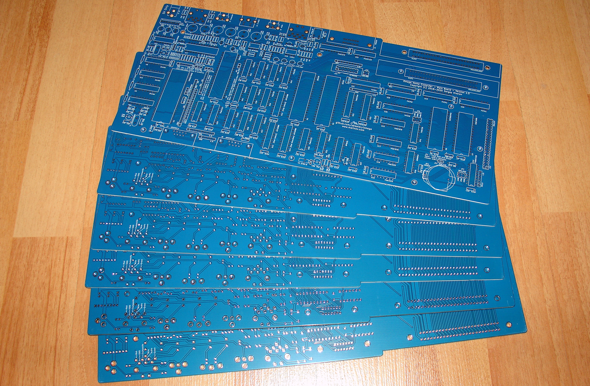
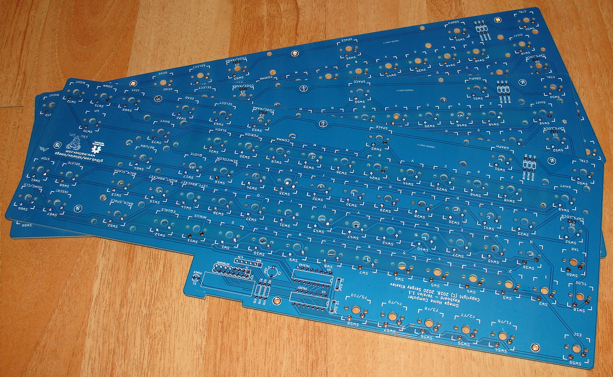
Для тех, кто любит погорячее, настало самое время стряхнуть пыль с паяльника. Если же вы чувствуете, что это не ваше, что вы не такой — лучше всего делегировать этап пайки компонентов мотивированному аутсорсеру и после получения готовых плат перейти к выявлению возможных ошибок монтажа.
Перечень электронных компонентов, необходимых для сборки, а также гербер-файлы печатных плат находятся в репозитории разработчика компьютера OMEGA Сергея Киселёва — в файлах Mainboard.md и Keyboard.md, в директориях Mainboard ⁄ gerber и Keyboard ⁄ gerber.
Сами компоненты удобно собирать для текущего проекта в пластиковые коробочки-контейнеры с убирающимися стенками. Убирая лишние стенки, можно объединять ячейки в более крупные для хранения длинных компонентов, например разъёмов слотов (гнёзд краевых разъёмов). В подобных коробочках (возможно, другой высоты и с другим количеством ячеек) также удобно хранить компоненты, различающиеся номиналами — например, резисторы, конденсаторы, стабилитроны, линейные стабилизаторы. Под прозрачную крышку коробочки удобно положить лист бумаги с обозначением компонентов, находящихся в ячейках. Использование коробочек поможет при необходимости быстро прерваться и убрать рабочее место — чтобы можно было аккуратно собрать и сложить используемые компоненты, приборы и инструменты, не опасаясь, что компоненты будут перепутаны.
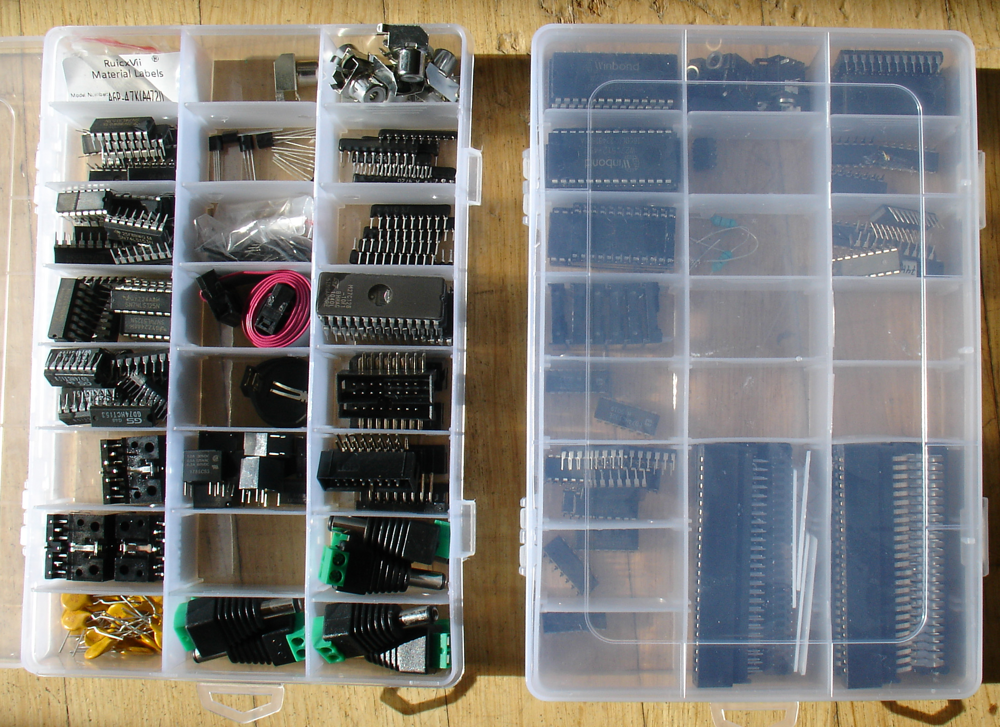
Если подходящих коробочек не нашлось, можно использовать лист бумаги (а ещё лучше перфокарту или подобный тонкий картон), на котором расположить группы компонентов по номиналам (номинал записывать рядом с каждой группой). Компоненты закрепить, прокалывая выводами лист и отгибая выводы с другой стороны. При таком подходе убрать рабочее место будет почти так же просто, как в случае компонентов, разложенных по коробочкам.
Будем считать, что если платы изготовлены на специализированном производстве, то они не содержат ошибок и были хорошо упакованы, то есть какие-либо повреждения на них отсутствуют. В другом же случае необходимо тщательно осмотреть печатные платы на предмет возможных дефектов, контролируя состояние дорожек и посадочных мест при помощи увеличительного стекла. Помните, что решение проблемы, выявленной на этапе проверки платы, обойдётся гораздо дешевле и займёт меньше времени, чем выявленной на уже собранной плате. Глубокую царапину, перерезающую дорожку, не поленитесь устранить, припаяв на место разрыва проволочку (например, кусочек вывода компонента) и закрыв место ремонта каплей паяльной маски, обработав её для отверждения ультрафиолетом. Слипшиеся дорожки следует разделить острым резаком или микродремелем.
Перед началом пайки следует очистить платы изопропиловым спиртом или чистым ацетоном, чтобы удалить возможные следы жира, которые будут препятствовать смачиванию посадочных мест припоем.
Компоненты будем припаивать, начиная сначала с низкопрофильных, чтобы потом не пришлось страдать, одновременно придерживая какой-нибудь диод в "ущелье" между двумя высокими соседями на снизу перевёрнутой плате и припаивая его выводы сверху.
Примечание 1
Хотя до монтажа компонентов, содержащих полевые транзисторы, и следовательно, уязвимых для статического электричества, ещё далеко, принимать меры по правильному обустройству рабочего места надо с самого начала. Обязательно используйте антистатический коврик и заземляющий браслет!
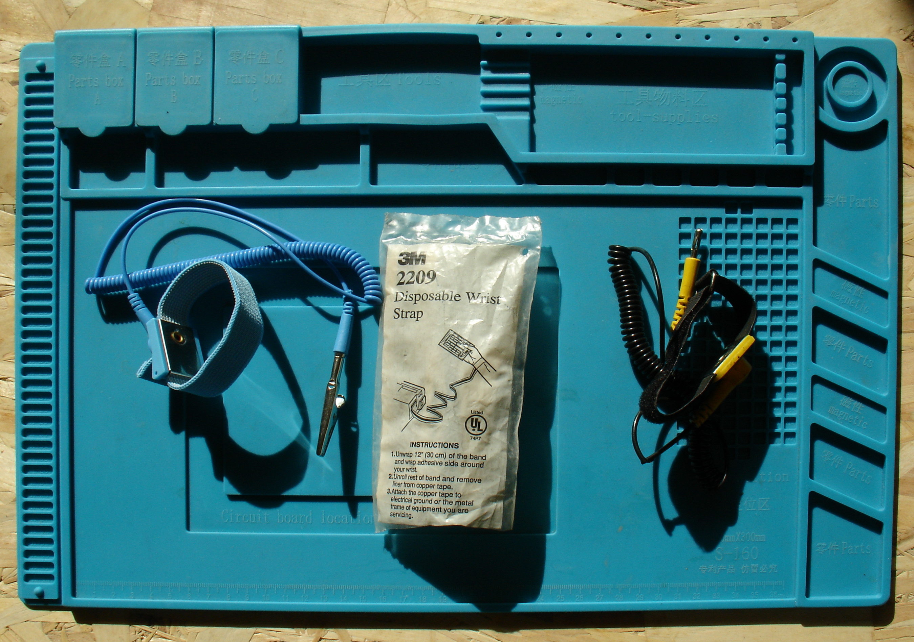
Примечание 2
Не забывайте проводить входной контроль электронных компонентов! В двадцать первом веке этого вовсе не следует стыдиться. Относитесь к этому не как к унизительной проверке, подрывающей доверие к поставщикам компонентов, а как к необходимой мере предосторожности! Тем более, что известны случаи маркировки микросхем серии74LS как74HC и наоборот. Биполярные транзисторы можно проверить простым тестером транзисторов, светодиоды, диоды и резисторы — мультиметром, индуктивности и конденсаторы — измерителем RLC, кварцевые резонаторы — тестером кварцевых резонаторов, микросхемы — тестером микросхем («IC-тестером»), тестером микросхем Олега Трифонова, или программаторами T48 и T76:
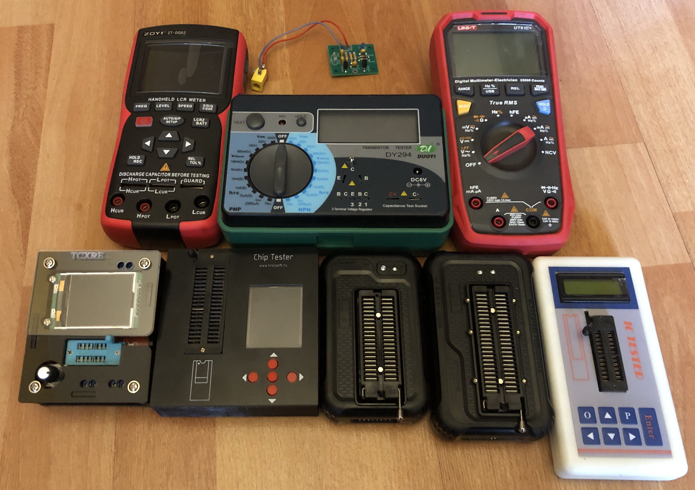
Итак, положим плату клавиатуры шелкографией вверх, и приступим к установке первых компонентов на их законные посадочные места.
Какие же компоненты будут первыми? А начнём мы с диодов D4, D5 и D6, поскольку во первых, они являются самыми низкопрофильными электронными компонентами, во вторых, на плате клавиатуры их всего три, и в-третьих, они расположены рядом.
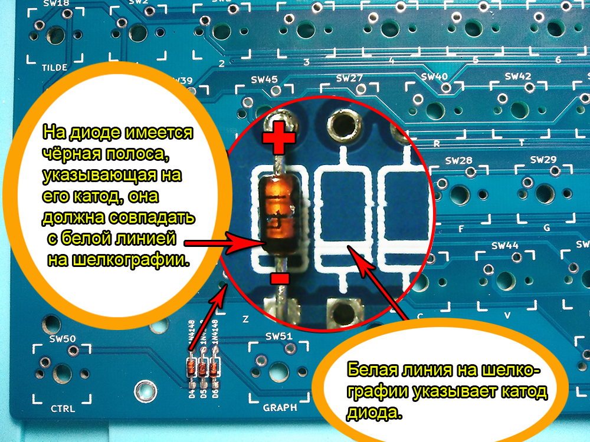
Все диоды имеют чёрную полосу со стороны катода. Для удобства установки на платах Омеги посадочные места диодов включают шелкографию, которая символически изображает диод с этой полосой. Больше того, контактная площадка для катода имеет квадратную форму, а для анода — круглую. Таким образом, для правильной установки диода надо просто расположить его так, чтобы полоса на его корпусе находилась на стороне рисунка с полосой, как показано на фотографии выше. Очень просто, не так ли?
Теперь вставим все три диода, пропустив выводы сквозь отверстия в контактных площадках и отгибая выводы с обратной стороны, чтобы при переворачивании платы диоды не вываливались. Теперь можно перевернуть плату и приступить к припаиванию выводов.
Обычная процедура пайки заключается в прижатии жала паяльника к выводу и контактной площадке, а прутка олова — к жалу. Если олово без флюса (просто проволока оловянно-свинцового сплава), то контактные площадки следует заранее смазать флюсом. Если припой и флюс выбраны правильно, капелька припоя аккуратно растечётся по выводу и контактной площадке. Диод при этом лучше придерживать специально натренированным на высокие температуры пальцем или прижать платой к коврику.
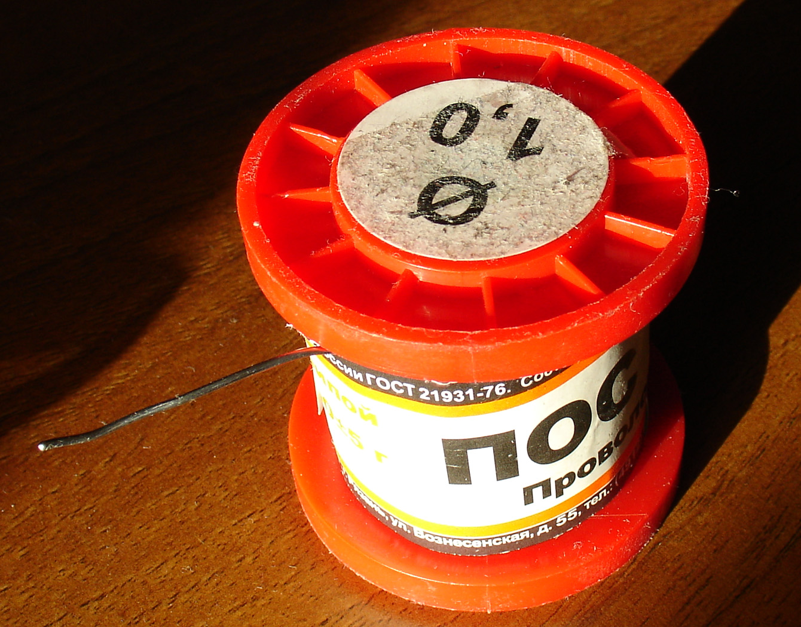
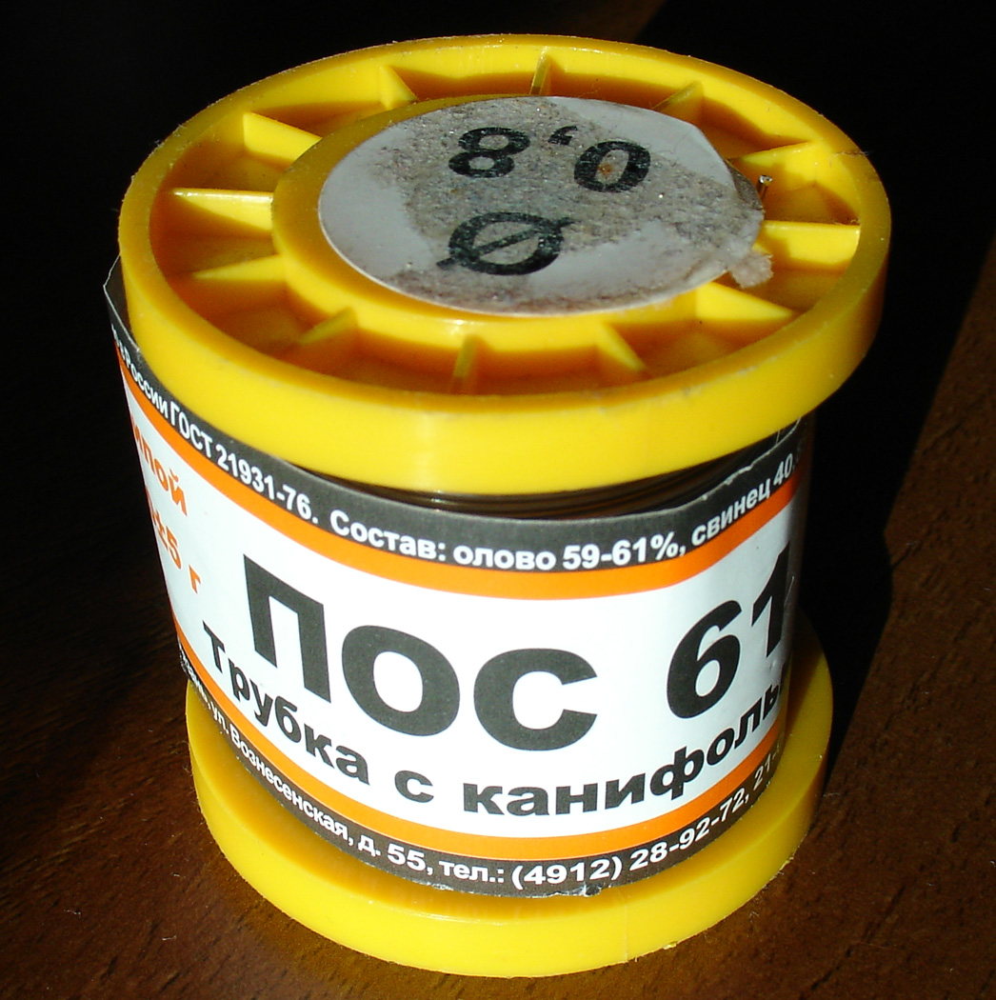
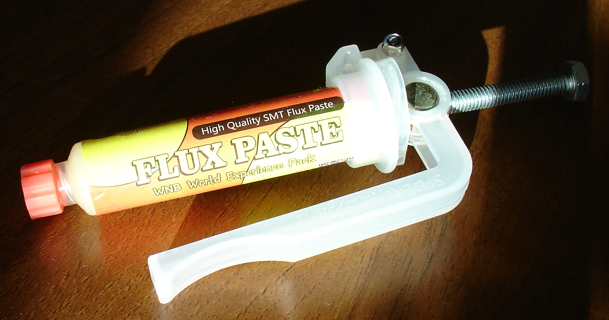
В интернете при желании можно найти огромное количество примеров правильной и аккуратной пайки, если есть какие-то сомнения в правильности действий, можно всегда обратиться к ним.
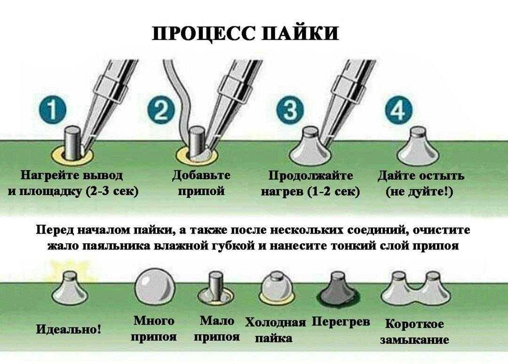
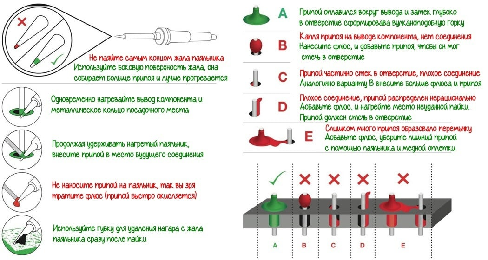
Обязательно, особенно если вы считаете, что…
…озаботьтесь хотя бы какой-нибудь вытяжкой, чтобы обезопасить себя от вредных испарений.
Ну хотя бы вот такой.
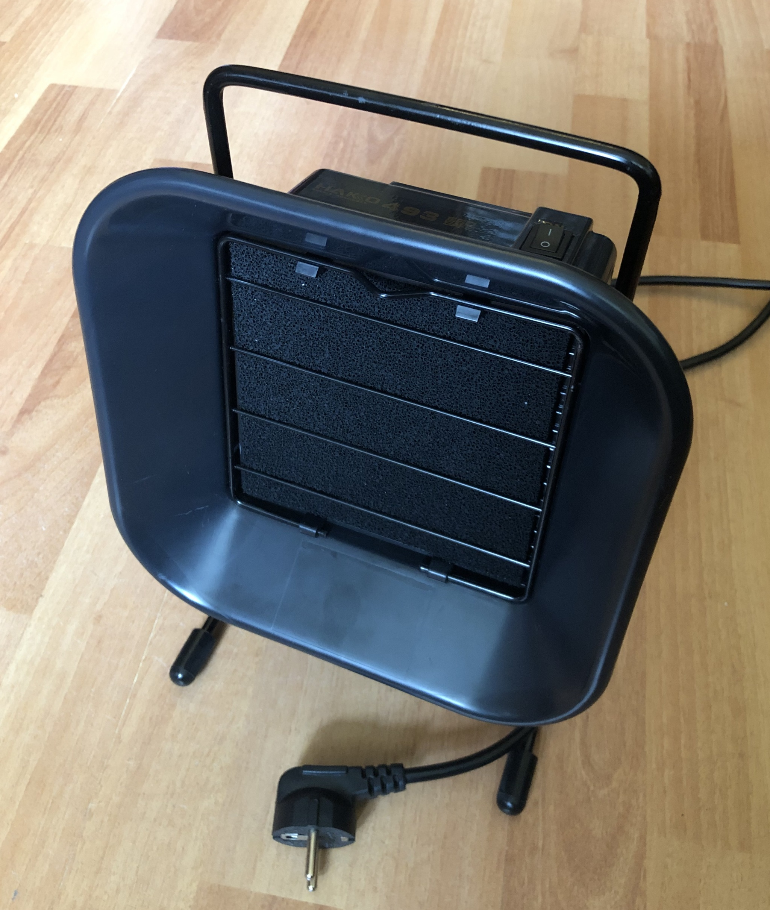
После успешной пайки любого компонента необходимо обрезать его выводы с помощью кусачек как можно короче — это существенно облегчит очистку платы спиртом и салфеткой. Ну или если совсем лениво, очистку можно произвести в ультразвуковой ванне (желательно, чтобы при этом на плате ещё не были установлены кварцевые резонаторы). Обратите внимание, что остатки выводов пополняют коллекцию проволочек, они пригодятся в качестве перемычек (также они используются как "усилители" силовых дорожек и при ремонте порванных дорожек).
Следующим по высоте компонентом являются резисторы, на плате клавиатуры их тоже три. Хотя они не имеют полярности, для облегчения «читаемости» платы припаивать их лучше так, чтобы цветовая маркировка была направлена в одну и ту же сторону. Это R1, R2 и R3 платы клавиатуры, а их значение составляет 470 Ом.
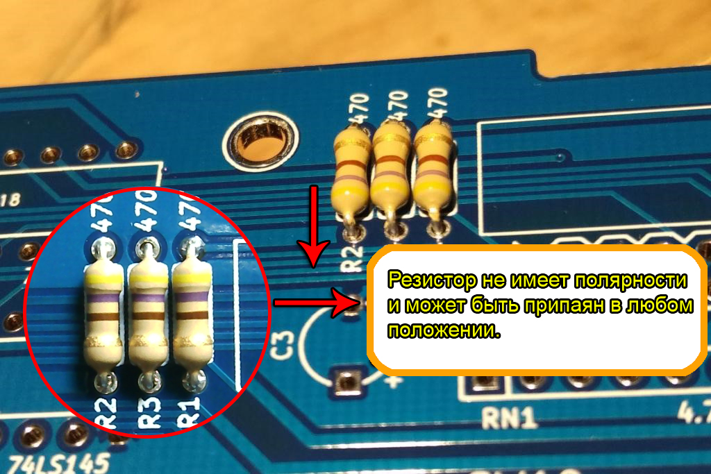
Процесс пайки резисторов не отличается от процесса пайки диодов: вставить, перевернуть плату, обкорнать выводы. Жидкий флюс удобнее всего вначале удалить сухой безворсовой (нетканой) салфеткой, чтобы избежать его расползания в виде раствора в спирте по всей плате и превращения её в липкую поверхность. Канифоль можно удалять механически (осторожно, чтобы не повредить паяльную маску) или растворяя её в спирте при активной работой щёточкой. Чистовым проходом будет протирка места пайки кисточкой, щёточкой, безворсовой салфеткой или специальным тампоном, с предварительным смачиванием изопропиловым спиртом, бензином или FLUX-OFF. Далее остаётся промыть деионизированной водой, высушить сжатым воздухом и полюбоваться получившейся красотой:
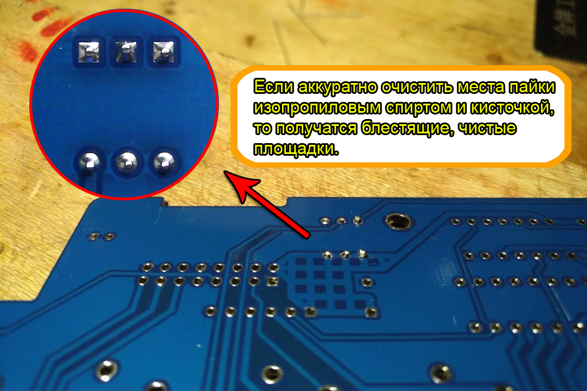
Между окончанием пайки и очисткой можно дополнительно пройтись по площадкам, выкусывая выводы под корень и беззастенчиво используя силы поверхностного натяжения, превращая площадки в красивые сферические сегменты или даже полусферы. После такой обработки можно смело протирать плату снизу самыми разными ткаными и неткаными материалами, при этом не опасаясь, что материал будет за что-то цепляться и оставлять на плате некрасивые «космы».
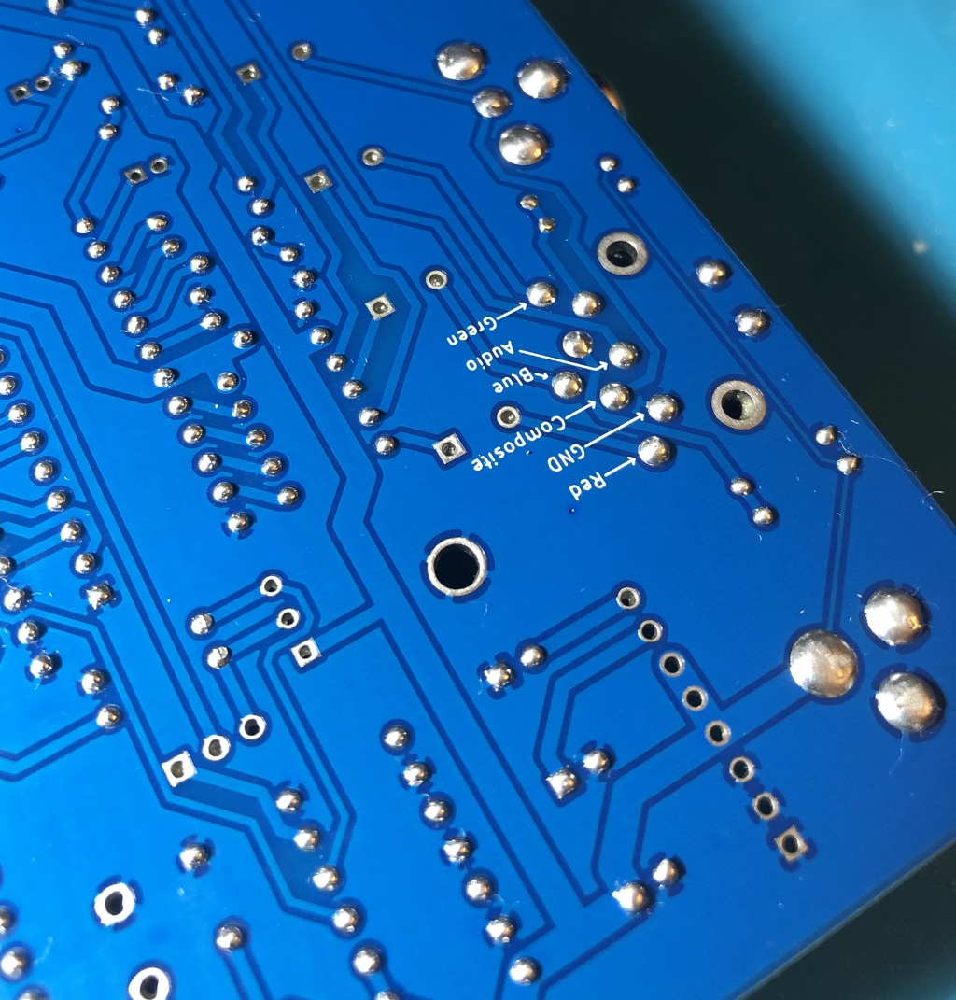
Теперь мы временно отложим плату клавиатуры и возьмём системную плату.
Если вы не открыты к рискованным экспериментам и боитесь за винтажный видеопроцессор, то вам, конечно, стоит намертво запаять перемычки, определяющие режим его работы, а не ставить гребёнку с джампером (съёмной перемычкой). И так, чтобы избежать неприятных сюрпризов, начнём с установки этих перемычек. Большинство из вас установят V9958 (который является видеопроцессором, принятым в стандарте MSX2+). На системной плате есть две перемычки (JP3 и JP4), которые позволяют выбирать между конфигурациями платы для V9958 и для V9938. При использовании V9958, не обязательно устанавливать транзистор Q2 (зачёркнут на фотографии), а перемычки JP3 и JP4 должны быть установлены в положение 2-3, как показано на фотографии:
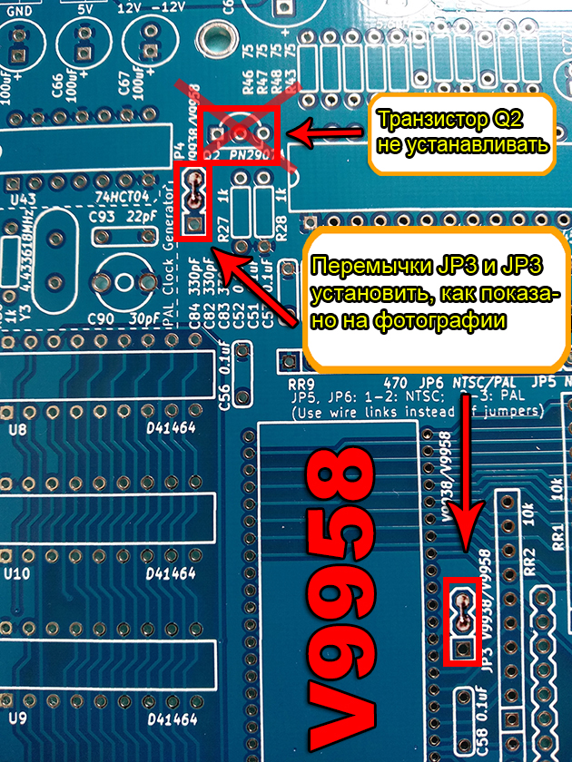
Ну а как же установить перемычки? Очень просто: взять два отрезанных вывода и согнуть их вот так:
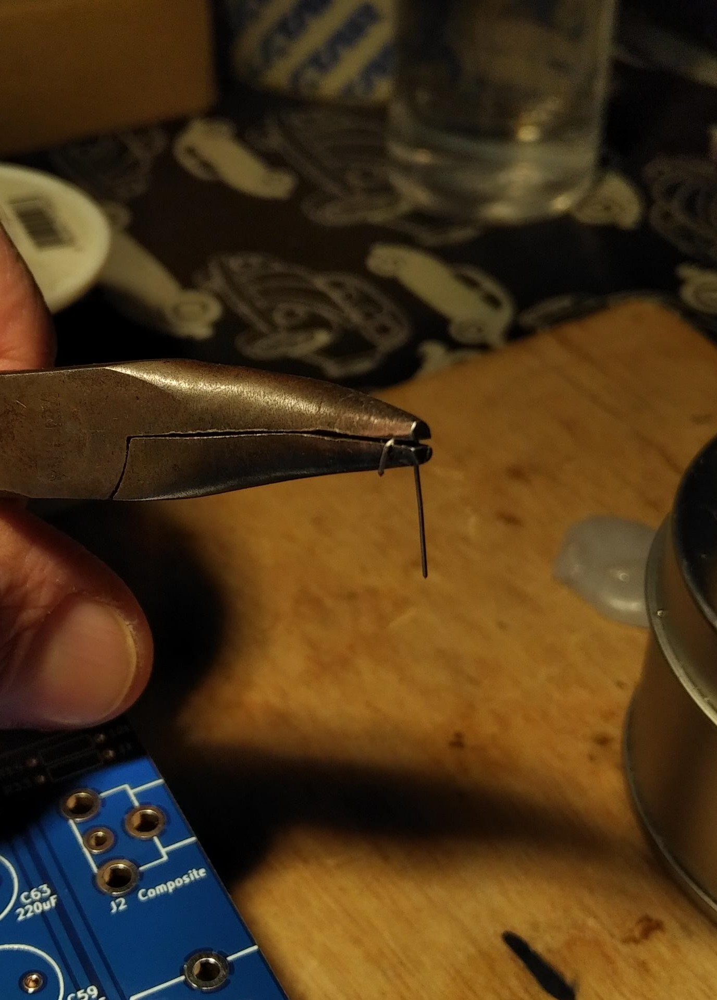
Теперь мы вставим перемычки в указанные выше отверстия (как видно на фотографии) и припаяем их. В отличие от других деталей, перемычки удобнее припаивать сверху, не переворачивая плату. Результат будет таким:
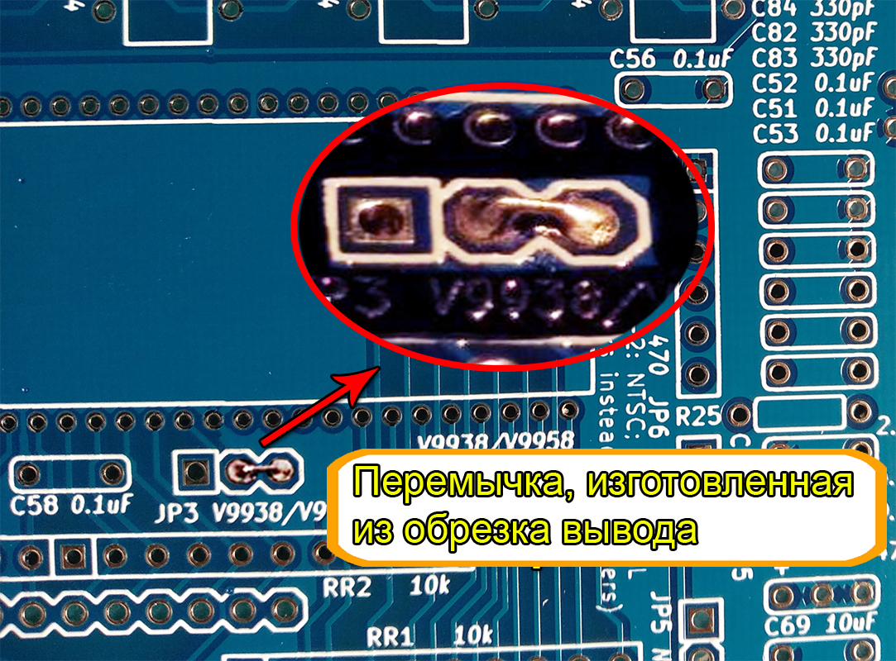
Ещё раз, чтобы избежать ошибки:
Ниже будет приведена таблица, поясняющая назначение всех перемычек.
Следующим в очереди на монтаж снова будет самый низкий компонент — это опять диод, теперь на системной плате. Вспоминаем, как правильно его сориентировать и припаиваем, как показано на фотографии.
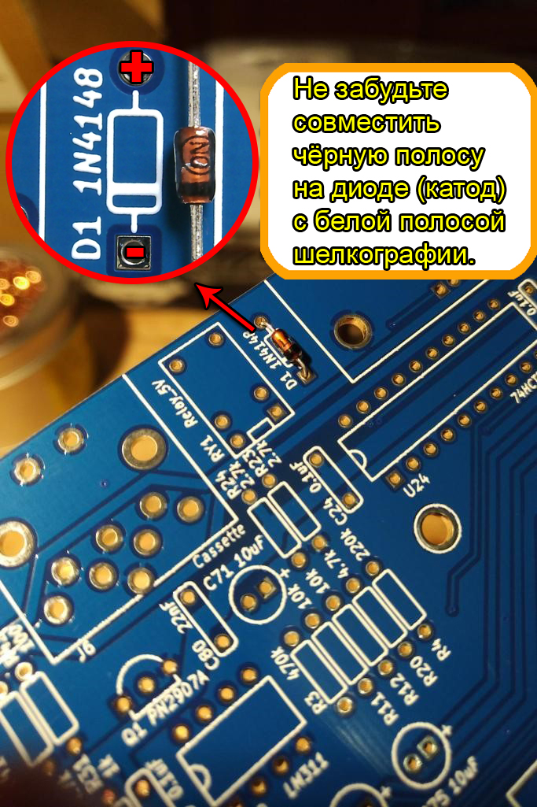
Затем мы припаяем все резисторы кроме R9. Позиционные обозначения резисторов на принципиальной схеме и системной плате — от R1 до R48. Для обозначения номинального значения сопротивления на их поверхность нанесены цветные кольца. Заранее пометьте номиналы резисторов, разложенные в ячейки коробочки-кассетницы (или приколотые к листу бумаги).
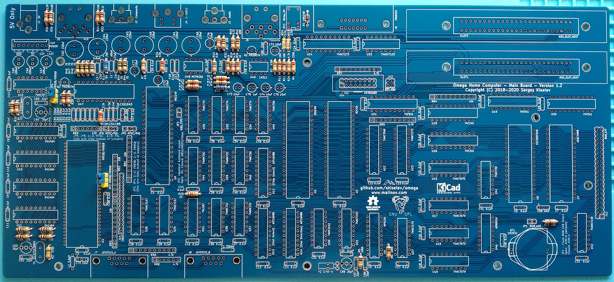
Следующим компонентом, который мы установим, будут индуктивности, их позиционные обозначения на принципиальной схеме и системной плате — L1, L2 и L3. Индуктивности с аксиальными выводами, применяемые в этом проекте, можно спутать с резисторами, они разве что будут отличаться по цвету. Будьте внимательны, чтобы не ошибиться.
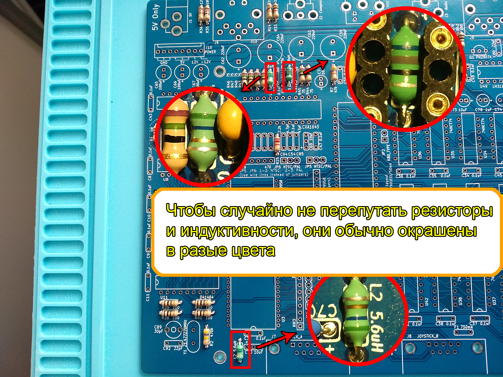
Далее мы припаяем кварцевые резонаторы, начиная с X2 (32,7 кГц), который расположен горизонтально. Кроме контактов, необходимо также припаять хомутик (сделанный из ранее отрезанного вывода). Если имеете опыт пайки, то предельно аккуратно, чтобы не перегреть кварцевый резонатор, припаяйте хомутик к его корпусу. Результат монтажа показан на фотографии ниже:
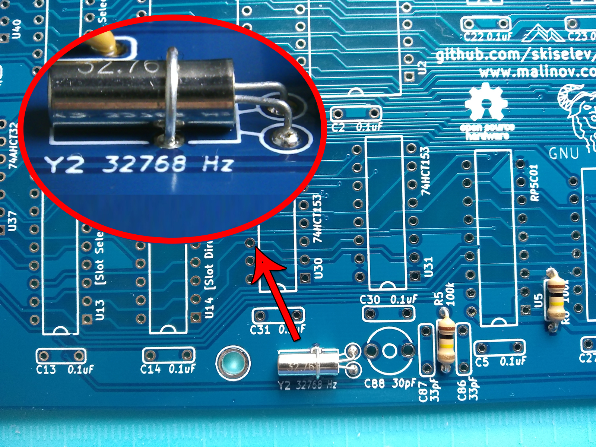
После этого мы припаяем два других кварцевых резонатора. Это неполярные электронные компоненты, поэтому какой стороной их припаивать — решайте сами исходя из возможности чтения маркировки: это правило хорошего тона при монтаже компонентов.
Настала очередь керамических конденсаторов. Начнём с конденсатора C3 платы клавиатуры и конденсаторов от C68 до C70, от C79 до C87 и от C92 до C94 системной платы.
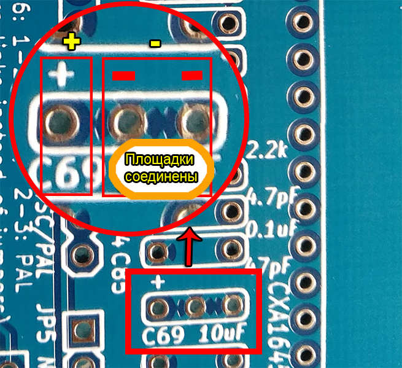
Обратите внимание, что посадочные места конденсаторов C68, C69 и C70 имеют необычную конфигурацию. Посадочное место состоит из трёх контактных площадок, хотя рекомендованные конденсаторы обычные, с двумя выводами. Кроме того, на посадочном месте обозначен плюсовой вывод, хотя рекомендованные керамические конденсаторы неполярные. Это было сделано специально, чтобы можно было установить конденсаторы любого типа — как полярные, так и неполярные. Опять, как и в случае с кварцевыми резонаторами, при установке конденсаторов выбирайте положение, при котором лучше читается номинал. Рекомендованные керамические конденсаторы-капельки устанавливайте выводами в крайние отверстия посадочного места.
Пояснение:
одна из крайних контактных площадок посадочного места замкнута со средней, поэтому конденсатор должен быть установлен так, чтобы его выводы были подсоединены к незамкнутой паре площадок: крайняя-средняя или крайняя-крайняя. При использовании полярных конденсаторов соблюдайте полярность: одиночная крайняя площадка это «плюс» (отмеченная символом «плюс» на шелкографии), а соединённые средняя и крайняя — «минус»:
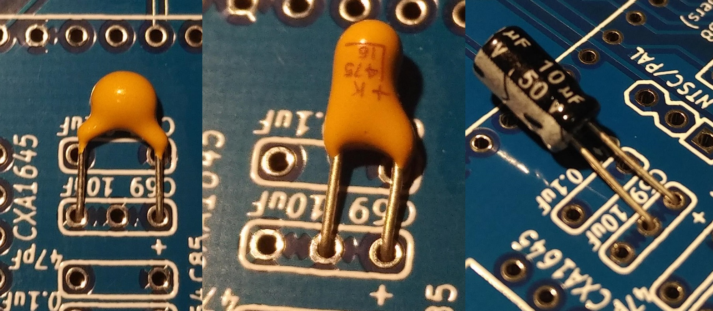
Теперь пришла очередь подстроечных (переменных) конденсаторов C88, C89 и C90. Припаиваются они точно так же, как и другие компоненты. Позже при желании можно произвести точную настройку, которая заключается в аккуратном изменении ёмкости при помощи диэлектрической крестовой отвёртки (такими отвёртками обычно комплектуются щупы для осциллографа). Оптимальным будет положение подвижного контакта конденсатора, при котором амплитуда сигнала на кварцевом резонаторе будет максимальной. Разумеется, для наблюдения сигнала надо минимизировать влияние щупа на генерацию сигнала. На практике это означает использование щупа с высоким входным импедансом, то есть с максимальным сопротивлением и минимальной реактивностью.
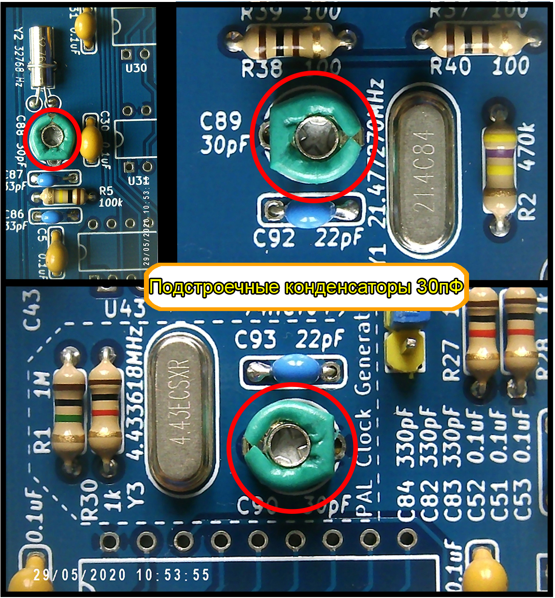
Продолжаем припаивать остальные конденсаторы-"капельки", кроме C91. Эти конденсаторы системной платы (от C1 до C58) имеют ёмкость 0,1 мкФ. Не забудьте, что на плате клавиатуры тоже есть пара таких, так что всего их 60. Если после ста двадцати паек вы почувствуете, что у вас отваливаются руки, радуйтесь: вы наконец набили руку на пайке.
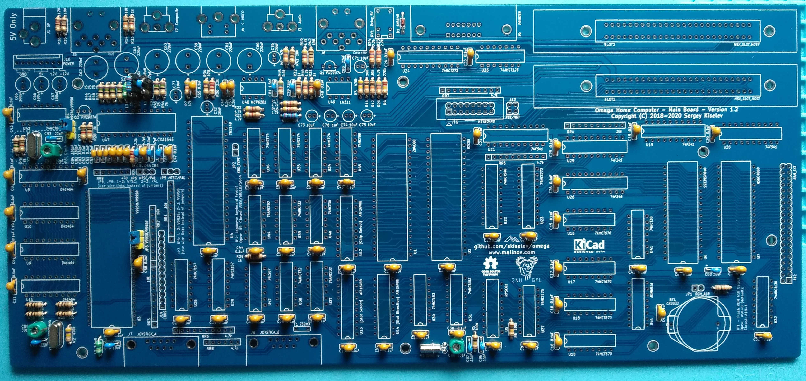
Настала очередь панелек для микросхем. И начнём мы с возможного затруднения.
Если в ваш магазин радиодеталей не завезли панельку шириной 400 тысячных дюйма (это расстояние между рядами выводов), которая требуется для установки микросхемы энкодера композитного сигнала U47, её всегда можно сделать из более широкой небольшой «доводкой напильником». То есть выкусить лишние части поперечных перегородок и склеить:
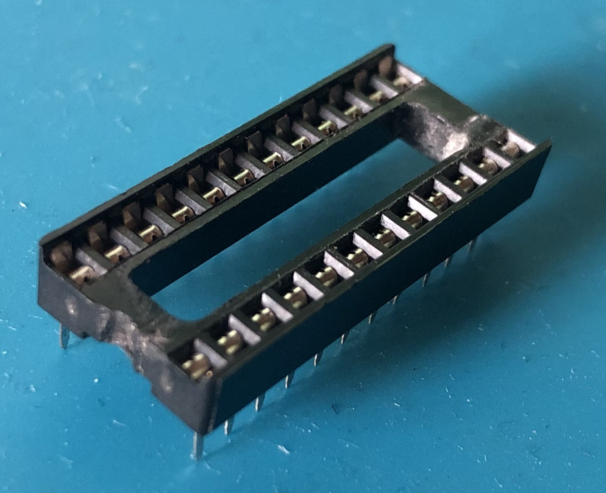
Или для совсем ленивых можно просто припаять две полоски гнёзд (на фотографии показано, как при помощи дополнительной полоски можно обеспечить вертикальность на время припаивания):
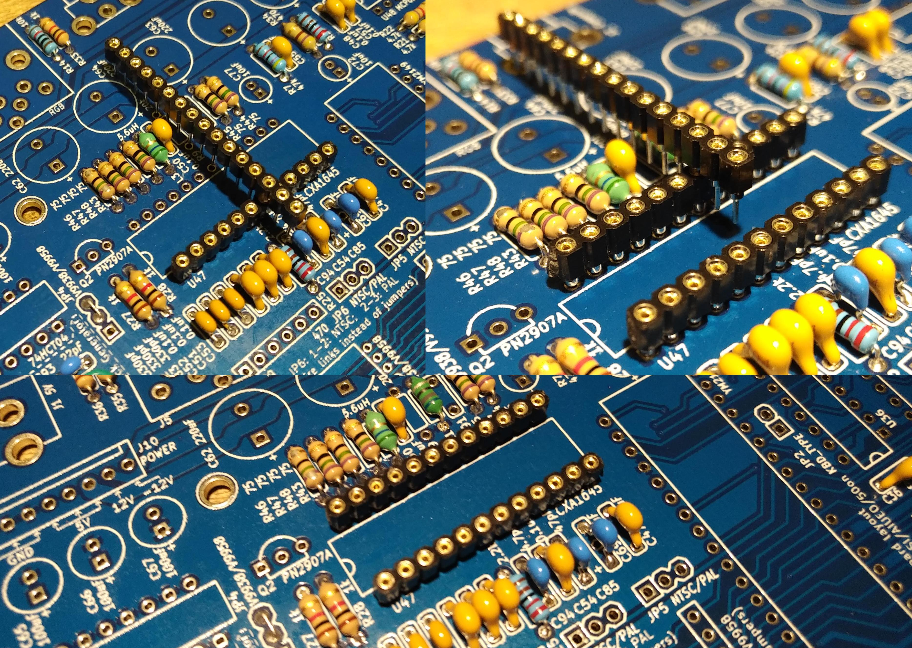
Теперь пришло время решить, какая кодировка цветности на композитном выходе J2 вам ближе к сердцу — NTSC или PAL. Тут всё одновременно просто и сложно.
Помните, вы запаивали резисторы, пропустив R9 и C91? Именно они отвечают за выбор кодировки цветности.
К слову сказать,
необязательно заказывать резистор именно с однопроцентной точностью (Остальные номиналы в одну шестую Ватта пятипроцентной точности ряда E24 скорее всего лежат в закромах в товарном количестве). Можно просто перебрать резисторы из имеющихся запасов, среди них скорее всего окажется нужный, имеющий отклонение от номинала пределах 150 Ом, а то и меньше.
Важное напоминание:
В любом случае, кодировка цветности сигнала на композитном (единый сигнал) выходе J2 (сигнал формируется микросхемой энкодера композитного сигнала U47) никак не влияет на сигнал, выводимый через компонентный (раздельные сигналы цветности «красный», «зелёный», «синий» и синхронизации) выход J5.
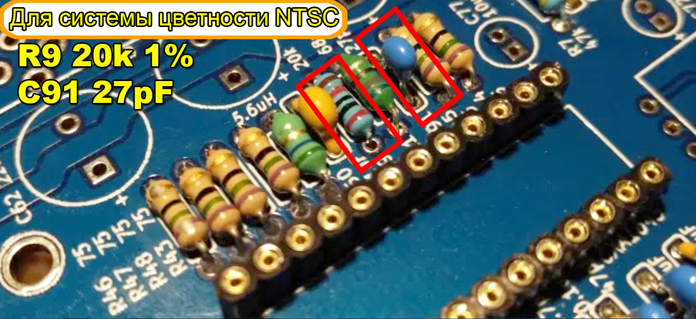
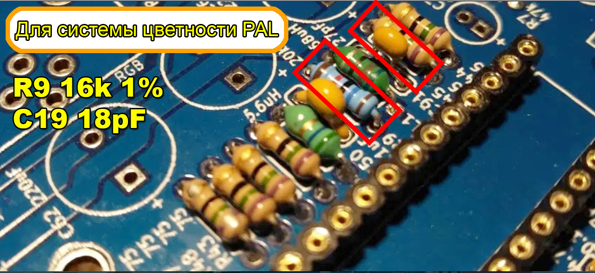
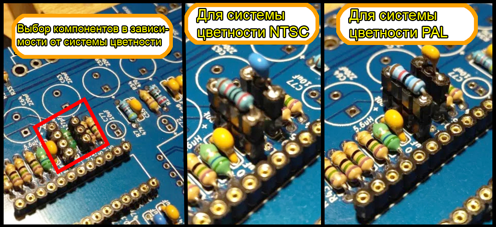
Рекомендую именно этот (RGB) вариант, поскольку он обеспечивает наилучшее качество видеосигнала (на сегодняшний день).
Необходимо всё же заметить, что скорость и совместимость компьютера будут зависеть от выбора NTSC или PAL видеопроцессором, но этот выбор не связан с выбором системы цветности микросхемой энкодера композитного сигнала U47. Это будет пояснено ниже.
Раз вопрос с припайкой или установкой в гнёзда резистора и конденсатора обвязки микросхемы энкодера композитного сигнала U47 закрыт, можно вернуться к анонсированному выше шагу установки панелек для микросхем. На каждой панельке есть выемка, обозначающая край с первым и последним выводами: если выемка расположена слева, то выводы нумеруются от нижнего левого до нижнего правого и далее от верхнего правого до верхнего левого. На плату панельку необходимо устанавливать так, чтобы её выемка оказалась рядом с обозначенной шелкографией выемкой посадочного места. Также контактная площадке первого вывода имеет квадратную форму, остальных — круглую. Вставьте панельку в печатную плату, затем переверните плату, ровно придерживая панельку любым удобным способом (например, уперев в поверхность, на которой лежит плата), и припаяйте нижний левый и верхний правый (ну или верхний левый и нижний правый) выводы. Теперь панелька закреплена, не торопясь припаять остальные выводы. Системная плата будет выглядеть так:
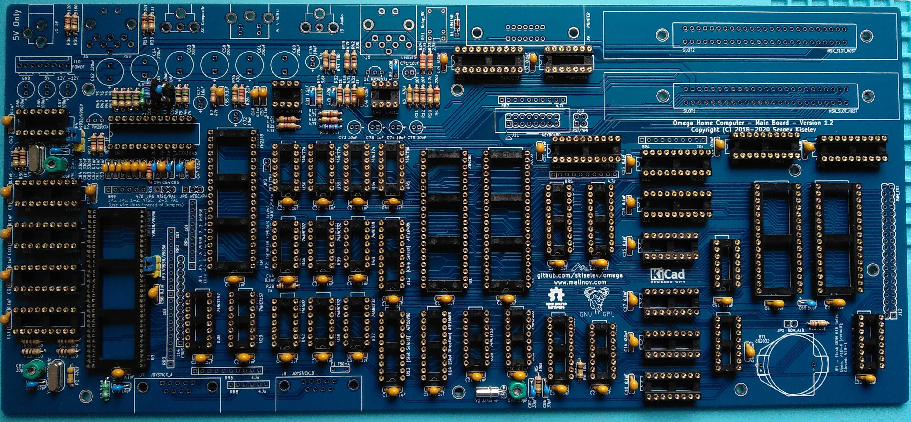
Настал черёд припаивания кнопок к плате клавиатуры. Соберитесь с духом и сделайте это! Всего-то 962 пайки. Если вы вдруг увидите мультфильмы на выключенном дисплее или телевизионные помехи в окне, значит вы надышались парами флюса, а если начало тошнить и болит живот, то парами припоя. Не доводите до этого! Используйте вытяжку, проветривание, респиратор, знакомого монтажника радиоэлектронной аппаратуры.
Очистите, промойте, просушите плату после большой пайки. Полюбуйтесь получившейся красотой и двигайтесь дальше.
Следующий по высоте компонент - это резисторные сборки.
Резисторные сборки выглядят как гребёнка. Это набор резисторов одинакового номинала, один вывод которых объединён:
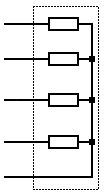
Общий вывод резисторной сборки отмечен кружочком. На посадочном месте резисторной сборки контактная площадка общего вывода имеет квадратную форму и отделена шелкографией в отдельный квадратик.
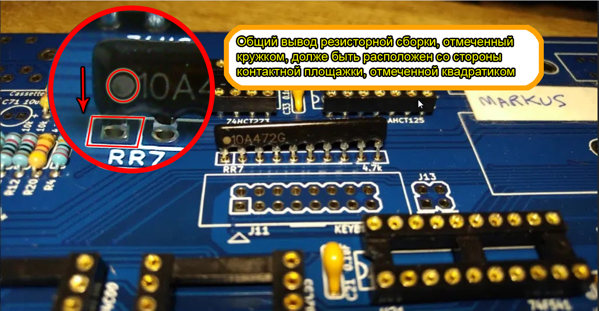
Перед запаиванием каждой матрицы не поленитесь проверить по маркировке или мультиметром, если вы не проводили входного контроля, что вы впаиваете именно ту матрицу, которую нужно, полностью исправную, и в правильном положении. Неправильно впаянная или частично неисправная матрица может разнообразить долгую утомительную диагностику множеством коротких истерических припадков.
Теперь настала очередь предохранителя F1 и транзистора Q1. Транзистор Q2 потребуется только в случае использования видеопроцессора V9938 (что маловероятно). Далее припаяем гнездо для батарейки CR2032 (хотя на самом деле это вовсе не батарейка, а гальванический элемент! Батарея — это несколько соединённых гальванических элементов), а затем все электролитические конденсаторы. Будьте внимательны! Все элементы, кроме предохранителя, имеют полярность. Результат должен быть таким:
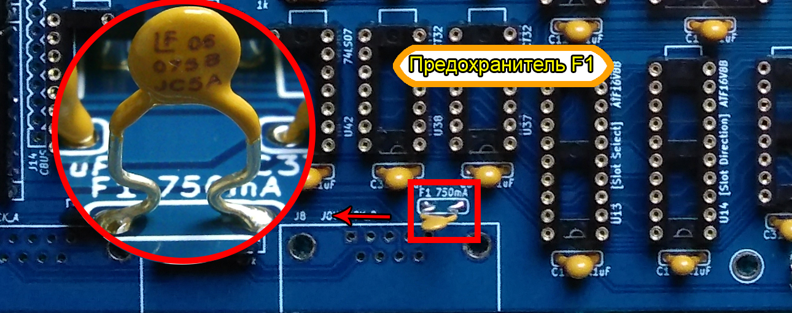
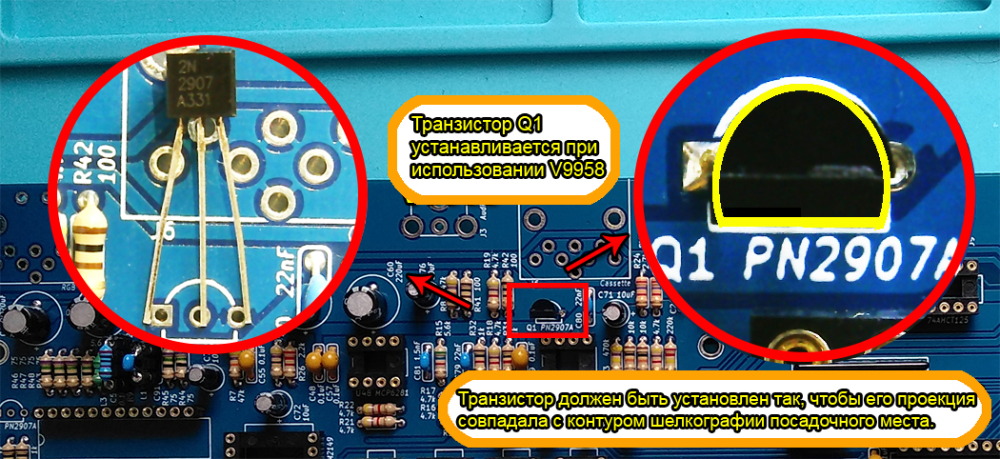
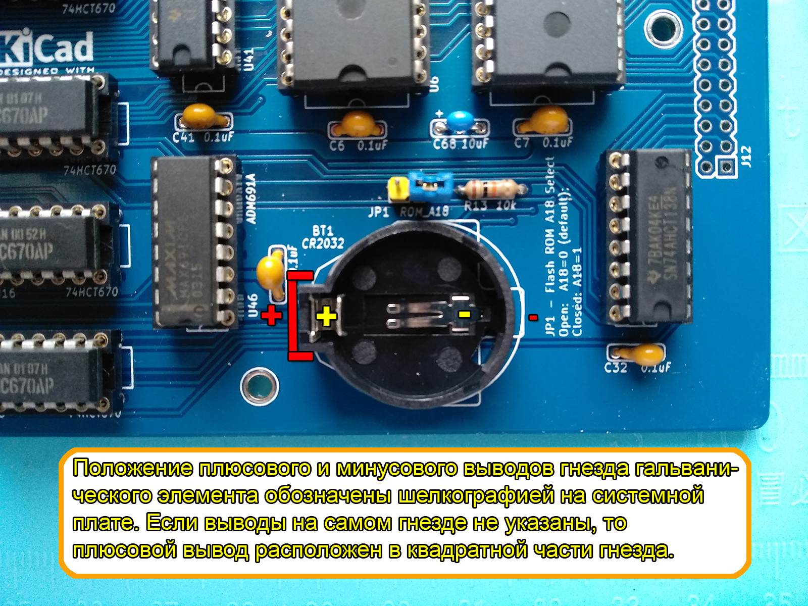
Теперь можно припаять разъём J1 на плату клавиатуры. Проверьте, что шлейф для подключения платы клавиатуры к системной плате хорошо входит в этот разъём.
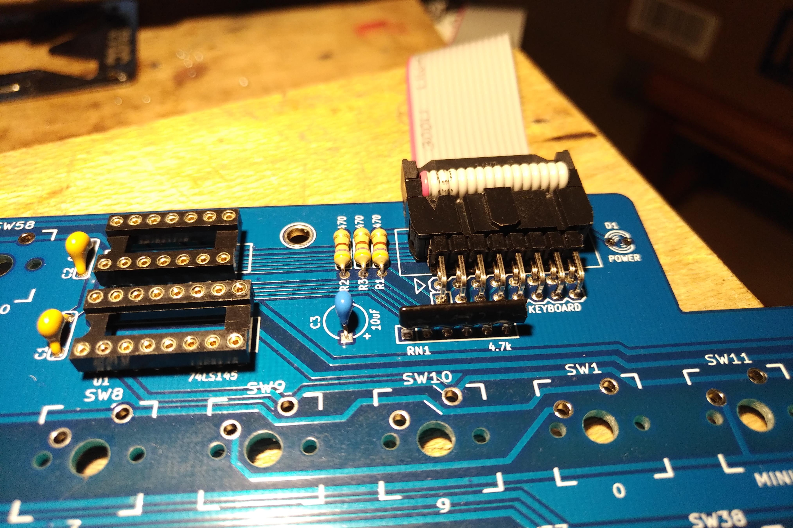
Конечно, вместо разъёма J11 можно припаять две гребёнки или сдвоенную гребёнку, но в таком случае появляется опасность неправильно вставить в него шлейф для подключения платы клавиатуры:
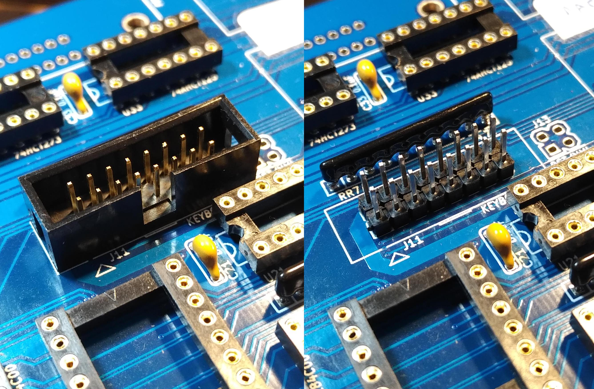
Не буду повторять о возможности выбора запайки перемычки или гребёнки с джампером. Пришло время принять решение насчёт:
Перед запайкой гнезда пятивольтового питания J1 важно определиться, где будет расположен выключатель питания. Если он будет разрывать сетевое напряжение пятивольтового блока питания или вместо него блок питания будет просто выдёргиваться из розетки, можно просто припаять гнездо J1. Если же вы хотите разрывать пятивольтовое питание после этого гнезда, необходимо будет установить выключатель (который будет расположен на корпусе) последовательно с гнездом.
Для этого достаточно свернуть в сторону задний вывод разъёма J1, и припаять к нему один из проводов, ведущих к выключателю. Другой провод от выключателя надо припаять к отверстию на печатной плате, куда должен был вставляться задний вывод разъёма J1.
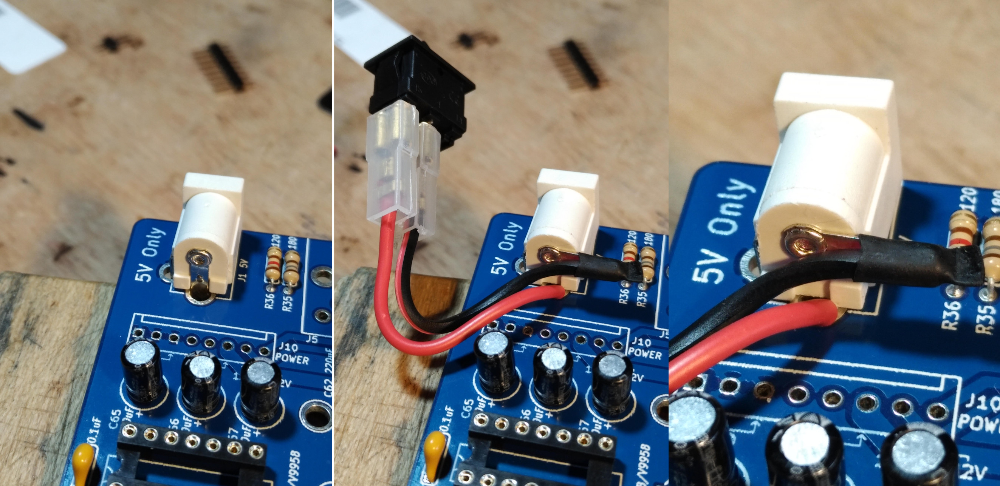
Далее следует припаять двойной ряд гнёзд J12 для подключения расширения оперативной памяти и гребёнку или разъём рекомендованного типа MTA-100 производства TE Connectivity или WF-08 производства Connfly electronic (или близкого, например XH производства JST или просто гребёнку) J10 для подключения питания.
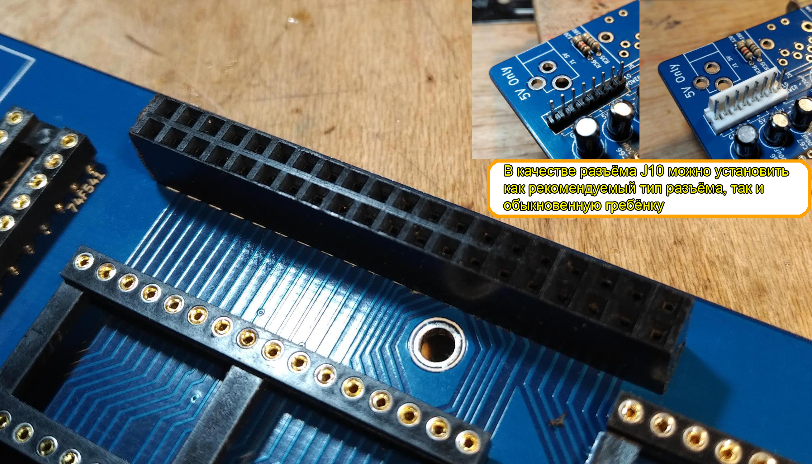
Угол системной платы с разъёмами питания теперь будет выглядеть примерно так:
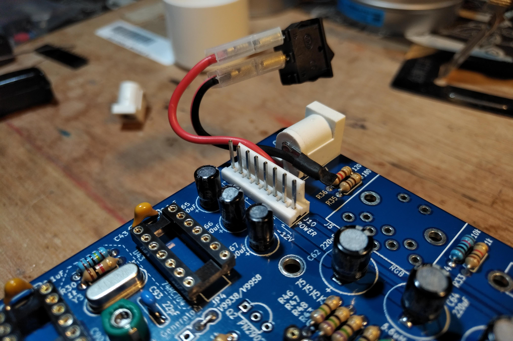
Разъём J10 можно использовать для подключения преобразователя питания, который будет формировать двенадцативольтовое двуполярное напряжение.
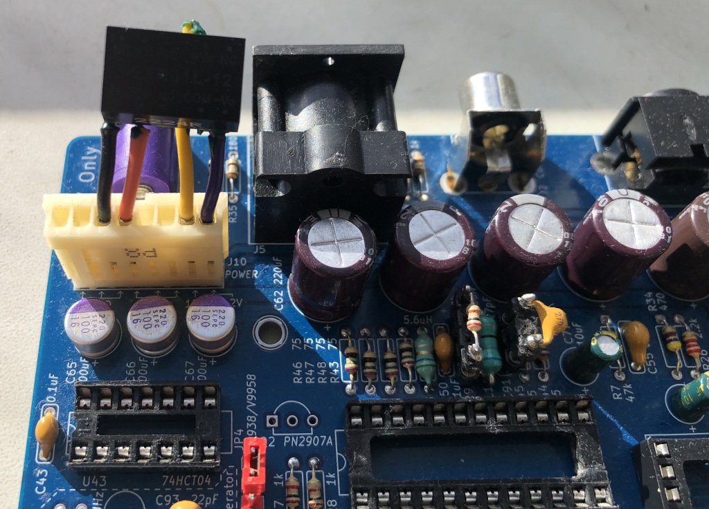
В качестве такого преобразователя удобно использовать модуль DETN01L-12 производства MeanWell, который будет формировать двенадцативольтовое двуполярное напряжение из имеющегося пятивольтового.
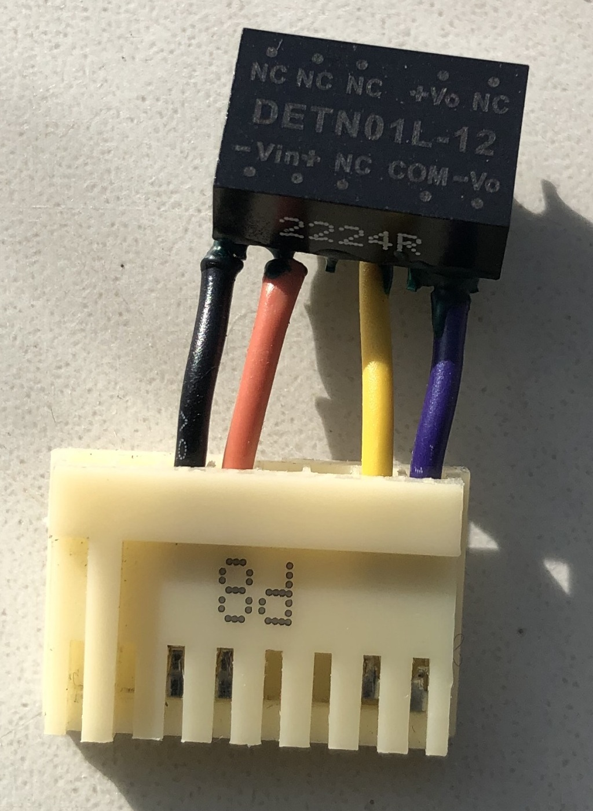
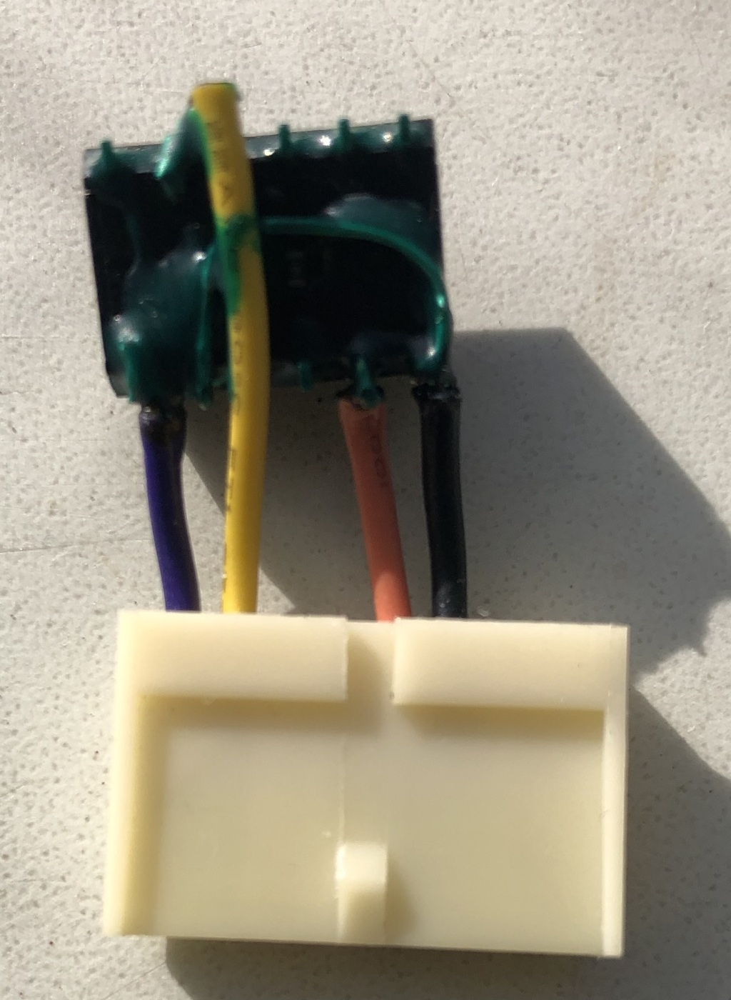
Теперь осталось только припаять реле RY1 и большие разъёмы. Второй разъём для подключения картриджа может быть классическим вертикальным или горизонтальным, для подключения с задней стороны:
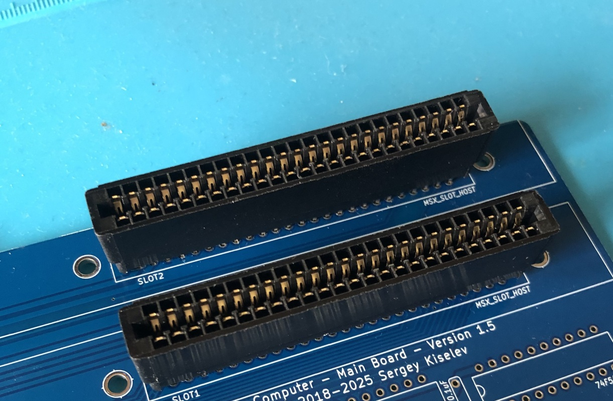
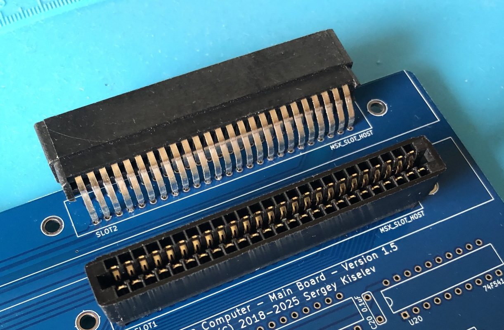
Остались разъёмы джойстика J7 и J8, разъём S-Video J4, разъёмы видео и аудио J2 и J3, слот(ы) для картриджей, разъём для подключения принтера J9 и два разъёма типа DIN-8: подключение магнитофона J6, выход RGB J5.
Ну вот, у нас наконец готова системная плата, только микросхемы не вставлены в панельки.
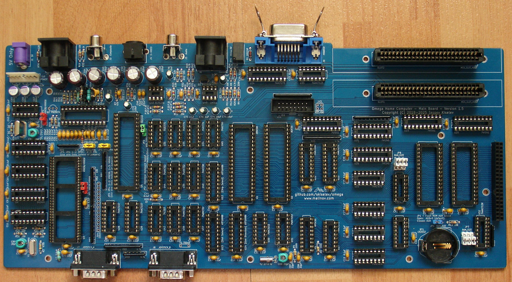
Осталось доделать плату клавиатуры. Что там осталось? Все кнопки, стабилизаторы клавиш и светодиоды.
Теперь настало время установить стабилизаторы клавиш (или выравнивающие скобы). Если вам близка тема механических клавиатур, и есть соответствующий опыт, то все пояснения про установку стабилизаторов, запайку кнопок и выбор колпачков-клавиш можно смело пропустить, сразу перейдя к проверке плат, вы и так знаете, что и в какой последовательности следует сделать.
Итак, стабилизаторы клавиш состоят из пары креплений, похожих на узкие кнопки, и металлических скоб. Устанавливаются эти конструкции под длинные кнопки, чтобы не допустить их перекоса при нажатии.
Обратите внимание:
в данном случае нужен набор, который крепится на печатную плату, а не на специальную металлическую пластину с вырезами.
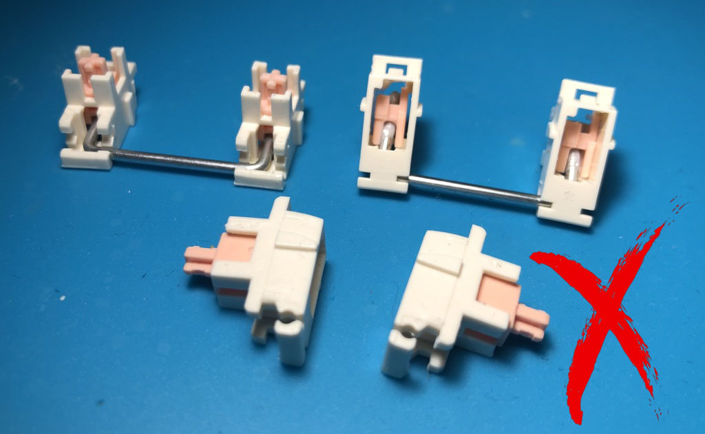
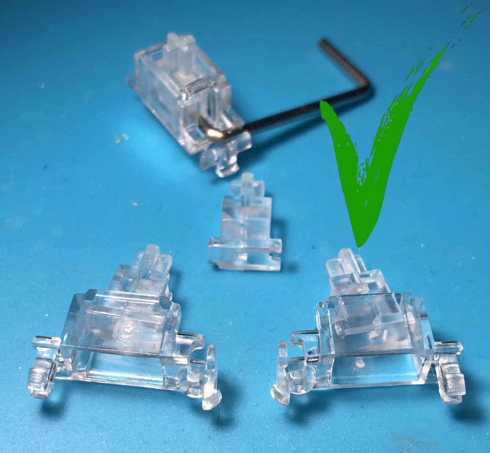
Для пущей надёжности и облегчения установки стабилизаторов можно использовать держатели не на защёлках, а с винтовым креплением, например Gateron PCB Stabilizer v2.
Если вдруг выравнивающей скобы нужной длины нет, то при достаточном умении можно сделать из длинной скобы более короткую (разогнуть-откусить-согнуть). Но лучше, конечно, сразу купить нужный размер. Скоба вставляется в подвижные части боковых держателей примерно так, как показано на рисунке:
После установки стабилизатора для пробела должно получиться следующее:
Не перепутайте:
Для клавиши пробела скоба расположена сверху, для остальных длинных клавиш — снизу.
Примерно так же устанавливаются выравниватели для остальных длинных клавиш. Проверьте, что узел клавиши собран правильно: при нажатии клавиши загнутые части скобы должны плавно ходить в поднимающихся и опускающихся подвижных частях боковых держателей.
После установки выравнивателей приступим к пайке кнопок. Это могут быть оригинальные «Cherry MX Black»…
…или, если желаете сэкономить, более дешёвые аналоги, например Outemu Pink.
Ну или какие-нибудь другие.
Для пробела рекомендуется использовать «Cherry MX Grey» (модифицированный вариант более известного «Cherry MX Brown», требует бо́льшего усилия нажатия) с линейной характеристикой и повышенным усилием нажатия — кнопка такого типа лучше подойдёт к длинной клавише. Можно использовать аналог производства Outemu — это Outemu Black и Outemu Silent Black. Для кнопок курсора можно использовать линейные «Cherry MX Red» или клацающие «Cherry MX Blue», или аналоги Outemu Red, Outemu Blue.
Обратите внимание:
желательно кнопки, как и стабилизаторы, выбирать также для установки на печатную плату, а не на специальную металлическую пластину с вырезами, так как в первом случае кнопки снабжены дополнительными ножками для надёжной фиксации на печатной плате, под которые в ней предусмотрены отверстия. Благодаря этим ножкам такие кнопки сразу встают на печатную плату ровно и не нуждаются в применении дополнительных методов по выравниванию. У клавиш Outemu Pink такие ножки есть.
Что касается выбора клавиш, то к ним предъявляется только требование совместимости с кнопками. И конечно, если предполагается установка светодиодов в кнопки, стоит обратить внимание, как должен проходить свет — только снизу или через клавишу.
Конечно, если вы собираетесь использовать русифицированный BIOS, имеет смысл подобрать набор клавиш с русскими буквами.
Если вы не уверены, что кнопки после припаивания на плату станут ровно (обычно такое происходит, если у кнопок нет дополнительных ножек), можно использовать следующий подход: надеть клавиши на кнопки, после чего слегка прихватить пайкой кнопки за один вывод (для одного ряда кнопок). Теперь можно припаивать кнопки как следует, выравнивая (покачивая и вращая) каждую перед пайкой. Стабилизаторы также помогают устанавливать кнопки сразу в правильное положение. После успешной установки всех кнопок плата клавиатуры будет выглядеть так:
И снова после пайки тщательно очистить и отмыть плату. Потом убедиться, что пайка аккуратная, рассмотреть места пайки при хорошем увеличении (с увеличительным стеклом или микроскопом). Особое внимание следует обратить на матовый припой - ведь правильный припой застывает блестящим. Помните, что хуже «холодной пайки» только тёплое пиво!
Теперь, когда обе платы полностью готовы (кроме установки микросхем в панельки), можно приступать к электрическому тестированию Омеги.
Соедините системную плату и плату клавиатуры ленточным кабелем, убедитесь, что красный провод кабеля соответствует первому контакту разъёмов (если использованы рекомендованные разъёмы, кабель должен автоматически установиться правильно). Проверьте вход питания на предмет короткого замыкания, например на разъёме J10. Без установленных микросхем самое низкое сопротивление по цепи питания образовано резисторами R35 и R36 (300 Ом). Остальные цепи незначительно влияют на это значение, немного уменьшая его.
Замечание:
при проведении измерений сопротивления подразумевается, что формирователь двуполярного двенадцативольтового напряжения отключён.
Если по цепи питания будет обнаружено короткое замыкание (точнее, сопротивление меньше 200 Ом), необходимо найти его причину, прежде чем двигаться дальше. Имеет смысл проверять платы по отдельности. Помощь может оказать микроомметр: чем ниже показанное им сопротивление, тем ближе измеряемый участок питание-земля расположен к проблемной точке. И да, причин пониженного сопротивления может оказаться несколько.
Имейте в виду:
мультиметр может подавать кратковременный звуковой сигнал из-за заряда конденсаторов.
Стоп, а как же светодиоды?
Да, мы их пока не впаяли. И этому, конечно, есть причина. Они помешали бы
выполнить предыдущий этап проверки.
Светодиод D1 на плате клавиатуры служит для индикации питания компьютера, поэтому соединив обе платы кабелем, подключим источник питания и дотронемся светодиодом до посадочного места D1. Конечно, можно не угадать правильное положение (в неправильном он просто не будет светиться, из строя ничего не выйдет), в таком случае его просто нужно повернуть, поменяв выводы местами.
Вот если заведомо исправный светодиод не будет светиться в обеих положениях, надо будет разбираться, почему на него не подаётся напряжение.
Если по плану этот светодиод стоит на плате, а не вынесен на корпус, можно его припаять. разумеется, перед этим надо обесточить плату. Также можно припаять светодиоды, монтируемые в кнопки CAPS и CODE. Конечно, важно не перепутать выводы: длинный вывод светодиода устанавливается в квадратную контактную площадку посадочного места.
Конечно, если вы планируете вынос этих светодиодов на корпус, то вместо светодиода надо будет припаять пару проводов.
Теперь наконец можно проверить питающие напряжения на всех микросхемах и на слотах. Подавайте питание и приступайте к замерам мультиметром, пятивольтовое напряжение должно быть между контактами, указанных на изображении красным плюсом, и контактами, обозначенных синим минусом:
Обратите внимание:
1) напряжение питания часов реального времени U5 на выводе 18 берётся не от общего питания +5 Вольт, а от вывода 2 монитора питанияU46 (отмечено зелёной линией).
2) при измерении двуполярного двенадцативольтового напряжения на слотах не забудьте включить формирователь двуполярного напряжения.
3) у всех микросхем, кроме U1, U2, U3, U4, U46 и U47 (для них указаны номера выводов питания и земли), питание подаётся на последний вывод, он же верхний левый, если микросхема расположена горизонтально и ключ, обозначающий первый контакт микросхемы, расположен с левой стороны корпуса, а земля подключается к нижнему правому выводу (при указанном расположении корпуса микросхемы).
Не забывайте, что
ноль (или около того) на мультиметре при измерении напряжения — это не только показатель соединения с общим проводом, но и возможность обрыва.
Можно и немного иначе:
проверять мультиметром соединение входа питающего напряжения на разъёмеJ1 илиJ10 с контактами, отмеченными плюсом, и «общего» входа («земли») с контактами, отмеченными минусом.
Измеряемое пятивольтовое напряжение на холостом ходу может быть немного больше, чем ровно пять вольт. По крайней мере, оно должно быть таком же, как на разъёме питания J1. Если всё в порядке, можно подключить плату клавиатуры и замерить напряжение на её панельках для микросхемы процессора U1 (шестнадцатый вывод) и микросхемы параллельного интерфейса U2 (четырнадцатый вывод).
Перед тем, как начать вставлять микросхемы в панельки, некоторые из них придётся ненадолго вставить в программатор. Речь идёт о U12, U13, U14 — ATF16V8 (программируемая логическая матрица, ПЛМ) и U6 — SST39SF040 (постоянное запоминающее устройство, ПЗУ).
Микросхема «флэш-памяти» SST39SF040 (U6) выбрана в качестве энергонезависимой памяти, или если совсем по ГОСТ, то как электрически перепрограммируемое постоянное запоминающее устройство (ЭППЗУ). Так как при работе в составе Омеги возможность перепрограммирования U6 никак не используется, будем использовать не совсем правильное обозначение «ПЗУ». Микросхема имеет ёмкость 512 килобайт, однако в схеме Омеги используется только половина, то есть 256 килобайт. Перемычка JP1 как раз предназначена для выбора, какую часть микросхемы будет видеть Омега: устанавливая ноль или единицу на линии A18 (старшая линия адреса микросхемы), можно выбирать, старшую (перемычка установлена) или младшую (перемычки нет) половину записанных в микросхему данных.
Друзья-испанцы собрали три прошивки для микросхемы U6:
Остаётся только выбрать нужный файл и при помощи программатора записать его в микросхему. Процедура записи не представляет ничего сложного, но зависит от типа программатора, ведь к каждой разновидности прилагается своя программа, и от операционной системы, так как для некоторых программаторов существует программное обеспечение, рассчитанное на несколько разных операционных систем.
Процедура самостоятельной сборки BIOS описана здесь.
Прошивки для микросхем U12, U13, U14 также записываются при помощи программатора, файлы содержатся в репозитории разработчика компьютера OMEGA, это файлы omega-chip_select.jed для U12, omega-slot_select.jed для U13, omega-slot_dir.jed для U14 в директории Mainboard ⁄ SPLDs
Наконец-то можно лихо вставить все микросхемы в панельки, правильно установить джамперы и включить Омегу, чтобы посмотреть, что произойдёт…
…Э, нет, торопиться не надо, торопиться не надо.
На самом деле намного лучше действовать шаг за шагом, проверяя, что всё работает как надо, и не торопясь выявлять и устранять проблему, ежели таковая возникнет.
Мы уже нежно припаяли все компоненты, аккуратно очистили платы и проверили каждую пайку при помощи увеличительного стекла, потом, бережно притрагиваясь мультиметром к контрольным точкам, проверили уровни натяжения.
Вероятность того, что всё заработает с первого раза очень высока, раз всё сделано правильно, но, к сожалению, даже самый опытный может ухнуть в пучину лёгкой формы тяжёлой депрессии, если вдруг после подачи питания произойдёт чуть меньше, чем совсем ничего.
Слушай, обидно, клянусь, обидно, ну!
Так что давайте вначале проверим правильность установки джамперов или перемычек:
| Джампер | Открыт | Замкнут | Назначение |
| JP1 | младшая | старшая | Выбор используемой половины ПЗУ |
| JP2 | JIS | ANSI | Выбор типа клавиатуры |
| Джампер | Положение 1-2 | Положение 2-3 | Назначение |
| JP3 | V9938 | V9958 | Выбор типа видеопроцессора |
| JP4 | V9938 | V9958 | Выбор типа видеопроцессора |
| JP5 | NTSC | PAL | Выбор системы кодирования цветности |
| JP6 | NTSC | PAL | Выбор системы кодирования цветности |
Группы джамперов или перемычек JP7, JP8 служат для выбора объёма дополнительного ОЗУ на плате, подключаемой к разъёму J12.
| JP7, 1MB | JP7, 2MB | JP7, 4MB | JP8, 1MB | JP8, 2MB | JP8, 4MB | Выбранный объём внешней памяти |
| открыт | открыт | открыт | открыт | открыт | открыт | Внешняя память не используется |
| замкнут | открыт | открыт | замкнут | открыт | открыт | 1 мегабайт внешней памяти |
| замкнут | замкнут | открыт | замкнут | замкнут | открыт | 2 мегабайта внешней памяти |
| замкнут | замкнут | замкнут | замкнут | замкнут | замкнут | 4 мегабайта внешней памяти |
Только теперь, когда все джамперы правильно установлены (или перемычки запаяны), можно вставить первые микросхемы. Поскольку у фабрично изготовленных микросхем ряды выводов немного отогнуты в стороны, каждую микросхему придётся положить сначала одним, а потом другим боком на твёрдую поверхность и слегка надавить, делая выводы перпендикулярными посадочной плоскости.
Как уже было сказано ранее, дальнейшая сборка платы будет производиться поэтапно, с проверкой работоспособности, которая будет заключаться в изменении напряжений, логических уровней, форм сигналов в контрольных точках, проверке выводимого изображения и звука на каждом выполняемом шаге.
Залог долгой и безупречной работы электронной схемы — это правильное, а в некоторых случаях, не побоюсь этого слова, диетическое питание. Желательно, чтобы блок питания был оборудован схемой защиты, отключающей его в случае выхода создаваемого напряжения за разрешённые пределы или при критической нагрузке. Разумеется, обязателен низкий уровень пульсаций, которыми грешат современные дешёвые импульсные источники вторичного питания. Да, они более экономичны по сравнению с классическими — трансформаторными с линейными стабилизаторами, но в них приходится бороться с пульсациями как на выходе, так и уходящими в высоковольтную электросеть. К тому же для обеспечения эффективности подавления импульсных помех им требуется заземление. А старый добрый трансформатор обеспечивает гальваническую развязку, не пускает высокое напряжение дальше первичной обмотки, и требует подавления только сетевых 50 Гц. Некоторым компромиссом может быть трансформатор и выпрямитель, дающий, к примеру, 30 вольт, и импульсный преобразователь, так называемый DC-DC (из постоянного напряжения в постоянное). Такой подход сочетает экономичность и предоставляет полную гальваническую развязку от электросети.
Мы все прекрасно помним из школьного курса физики, что любой реальный, воплощённый в металле трансформатор, обладает межобмоточной ёмкостью, которая оказывает весьма низкое сопротивление мощным импульсам частотой в десятки килогерц и их многочисленным более высокочастотным гармоникам, обеспечивающим работу прямоходового или обратноходового импульсного блока питания. Именно для сокращения пути возврата (уменьшающего излучение помех) этих синфазных (для выходов низковольтного напряжения) помех используется игрек-конденсатор (специально разработанный для борьбы с синфазными помехами, в отличие от обычного конденсатора у него нормировано максимальное рабочее и импульсное (пиковое) переменное напряжение, а при выходе из строя он превращается в разрыв, а не замыкание), соединяющий высоковольтную и низковольтную земли. Но при отсутствии заземления, подключённого через игрек-конденсатры к фазному и нейтральному проводам электросети, на низковольтных выходах блока питания будет присутствовать половина сетевого напряжения (измерения показывают действующее значение 90–100 В для разных образцов блоков питания) относительно земли. Это производная именно сетевого напряжения, с частотой 50 Гц. Да, ток просачивающегося сетевого напряжения с низковольтных выходов на землю небольшой, десятки микроампер, для человека это не опасно. Но электронику убивает и высокое напряжение с минимальным током, например, статическое. Удаление игрек-конденсатора из блока питания позволит вдвое-втрое снизить это высокое напряжение, но не удалить полностью — ведь межобмоточная ёмкость никуда не делась, а через неё сетевое напряжение также просачивается. И ценой этого удаления будет появление мощной помехи, при этом ещё возрастёт ток на землю просачивающегося сетевого напряжения.
Что же это означает на практике? А означает это то, что любое прикосновение к плате, подключённой к незаземлённому импульсному блоку питания, означает подачу в эту точку переменного напряжения 90–100 вольт и частотой 50 герц. Имейте это в виду во время экспериментов с Омегой, и учитывайте, что вышесказанное также справедливо при касании платы щупом заземлённого осциллографа.
В заключение этой темы необходимо также упомянуть, что для экспериментов может потребоваться и лабораторный блок питания, снабжённый индикацией напряжения и тока, а также позволяющий ограничить потребляемый ток.
Заканчивая этот раздел, исключительно для иллюстрации в стиле Чарльза Лютвиджа Доджсона покажу три блока питания:
Начнём с того, что вставим процессор U1, видеопроцессор U3 V9958 или V9938, ПЛМ U12 и U13, двунаправленный буфер U26, буферный формирователь U42 и монитор питания U46. Если у нас нет ПЗУ U6 с записанной прошивкой «Halt-CBIOS», придётся пропустить этот шаг, и вставив ПЗУ U6 с любым вариантом BIOS, перейти к следующему шагу.
Если же у нас есть ПЗУ U6 с записанной прошивкой «Halt-CBIOS», вставим его в панельку для U6 и снимем джампер JP1. Ещё раз проверьте, что джамперы или перемычки JP3 и JP4 установлены правильно, соответствуют типу видеопроцессора U3.
Первый шаг: мы подключим Омегу к источнику питания и посмотрим, не бахнуло ли где, не задымилось ли, не греется ли как утюг какая-нибудь микросхема. Если что-то всё же случилось, следует немедленно отключить питание.
Если ничего плохого не происходит, надо проверить, что напряжение питания в норме (то есть около 5В). Его можно измерить между выводом 18 процессора U1 и общим проводом, или в любой панельке между выводом питания и общим проводом.
Если у нас, как договаривались, в ПЗУ U6 записана прошивка «Halt-CBIOS» и джампер JP1 снят (то есть используется половина прошивки «Halt»), то на выводе 18 HALT («инверсный выход состояния останова») процессора U1 относительно общего провода (например вывода 29 процессора) должен быть логический ноль (напряжение, близкое к 0В). Если это не так, всё выключаем и ищем, что не так.
Теперь можно выключить Омегу, поставить джампер JP1 и снова включить Омегу. Теперь на выводе 18 процессора должна быть логическая единица (напряжение, близкое к 5В). При любой рабочей прошивке ПЗУ U6 на этом выводе будет логическая единица.
Примечание 1:
процессор может не стартовать из-за висящего в воздухе входа 24 WAIT. В таком случае, пока не установлена ПЛМ U14, можно подтянуть этот вход к напряжению питания резистором номиналом 10 кОм.
Примечание 2:
убедитесь, что сигнал сброса RESET имеет высокий логический уровень. Супервизор напряжения может удерживать состояние сброса, если элемент питания не установлен, установлен неправильно или разряжен.
На этом шаге было проверено, что процессор получает питание и тактовые импульсы, и самое главное, выполняет программу из ПЗУ (по крайней мере, первую команду). Формирование видеосигнала пока не проверяется. Если первый шаг завершился неудачей, придётся дотошно проверять, что было причиной. А причин может быть множество: некачественная печатная плата, проблемный блок питания, плохая пайка на плате, неисправная микросхема, неправильно установленная в панельку микросхема, некачественная панелька микросхемы…
На втором шаге будут дополнительно установлены микросхемы программируемого параллельного интерфейса U2, селектора-мультиплексора U30, комбинаторной логики (далее — логики) U39, энкодера композитного сигнала U47, установлен элемент питания в гнездо BT1, при этом в ПЗУ U6 должна быть записана прошивка C-BIOS с системой цветности NTSC, например «Halt-CBIOS» при условии установки джампера JP1. Джамперы JP5 и JP6 должны быть установлены в положение 1-2 (NTSC), выход композитного видеосигнала или выход видеосигнала RGB должен быть подключён к телевизору соответствующим кабелем. Плата будет выглядеть примерно так:
Включаем телевизор, выбираем нужный видеовход, и… приступаем ко второму шагу: включим Омегу, и снова внимательно присматривается и принюхиваемся к плате. На этот раз видеопроцессор будет немного нагреваться. При этом, несмотря на то, что микросхемы видеопамяти ещё не установлены, на экране будет отображаться какой-то случайный цвет, демонстрирующий, что видеовыход работает (экран может быть и чёрным, но табличка «сигнал отсутствует» на экран телевизора выскакивать не должна).
На третьем шаге установим микросхемы видеопамяти U8-U11. На фотографии платы они отмечены красной рамкой:
Снова включаем Омегу. Если всё прошло хорошо, то на экране мы увидим следующее:
Видеопроцессор нагревается при работе, но пока изображение нормально выводится, следуйте правилу: работает — не трогайте. Установим следующие микросхемы: логика U38, U37, U40, U41, U45, селектор-мультиплексор U31, регистры U22 и U23, дешифратор U32, регистры U18, U17, статическая память U7, как показано на фотографии:
В ПЗУ U6 должна быть записана прошивка C-BIOS с системой цветности NTSC. Если будет записана прошивка с системой цветности PAL, то изображение будет в оттенках серого. На экране будет отображено:
Что же, если мы достигли этого шага, пришло время попробовать использовать оригинальную прошивку BIOS. Установите часы реального времени U5 и триггер U27, запишите в ПЗУ U6 прошивку, содержащую BIOS с MS BASIC (например, «Стандартная» прошивка). Плата при этом будет выглядеть так:
Это типичный экран MS BASIC, который вы увидите после успешной загрузки на пятом шаге:
Хотя на системной плате ещё отсутствует большая часть микросхем, уже можно попробовать подключить плату клавиатуры. На ней необходимо установить микросхемы дешифратора U1 и буфера U2. Мы включим Омегу и проверим, реагирует ли клавиатура на нажатия, загорается ли светодиод питания, загораются ли светодиоды CAPS и KANA. И это будет шестой шаг.
Установим в панельки микросхему логики U43 и (если у нас есть) запишем в ПЗУ U6 прошивку с поддержкой системы цветности PAL, например Прошивка «PAL». Джамперы J5 и J6, разумеется, необходимо будет установить в правильное положение (конечно, если мы ставим прошивку BIOS с поддержкой PAL), и мы наконец сможем увидеть на экране телевизора цветное изображение, переданное в системе PAL. Это изображение платы, как она выглядит на седьмом шаге:
Хотя аудио процессор ещё не установлен, при включённом звуке телевизора, мы можем услышать «щелчок» при нажатии клавиши. Теперь установим операционный усилитель U48, и этот звук будет воспроизводиться с нормальной громкостью. Это восьмой шаг.
Теперь, добавив ещё несколько триггеров U34, U35, U36 и логику U44, можно наконец установить аудиопроцессор U4. Переходим к девятому шагу.
Теперь после загрузки Бейсика можно проверить его музыкальные возможности: ввести команду PLAY "CDE" услышать долгожданное "до-ре-ми".
Конечно, лучше всего проверить звуковые возможности Омеги при помощи какой-нибудь игры, но картриджи в слотах и загрузка с магнитофона ещё не работают.
Поэтому установим микросхемы, необходимые для правильного подключения картриджей. Это регистры U19, U20, U21, формирователь U25, ПЛМ U14, регистры U15 и U16. Так должна выглядеть плата на десятом шаге:
Вначале лучше включить Омегу без картриджа, и только убедившись, что всё работает и ничего не греется (кроме разве что видеопроцессора) и не дымится, повторно включим со вставленным картриджем. Если всё в порядке, он должен заработать:
Прежде чем начинать играть в загружаемые с магнитофона игры, надо вставить компаратор U49. Так должна выглядеть плата на одиннадцатом шаге:
Мы загрузим первую игру с магнитофона, на экране будет что-то вроде этого:
Какие микросхемы остались не установленными? После установки мультиплексоров U28 и U29 на двенадцатом шаге можно будет попробовать джойстик.
Загрузим с магнитофона или картриджа другую игру и проверим работу джойстиков.
Наконец-то вставим последние оставшиеся микросхемы — регистр U24 и буфер U33, и скрестим пальцы, чтобы все заработало на последнем тринадцатом шаге.
Подключим принтер и выполним тестовую печать, подобную такой:
a) Спокойствие, только спокойствие.
Не стоит срываться в воронку бесплодных попыток, с каждым разом усугубляя ситуацию, повторяя неудачные действия и погружаясь в бездну отчаяния. Если всё совсем плохо, лучше отложить это занятие до следующего раза, когда состояние «всё валится из рук» сменится на чёткую уверенность в своих действиях, да и в голову за прошедшее время наверняка придут какие-нибудь возможные причины возникших сложностей и варианты действий по их выявлению и устранению. Перед тем, как что-нибудь сделать, несколько раз подумайте: не сделаете ли ещё хуже? Точно ли это поможет? Не является ли это повторением прошлых усилий, не принёсших ожидаемых результатов? Убедитесь, что всё подсоединено правильно и настроено как нужно.
Если система работала, тщательно проверьте последние внесённые изменения, и вернитесь к последнему рабочему состоянию. Ещё раз проверьте исправность и номиналы добавляемых компонентов, наличие на них питания, отсутствие коротких замыканий, правильность выполняемых действий.
Ещё раз проверьте номиналы компонентов, особенно, если их можно перепутать визуально, уточните их правильное расположение не по шелкографии, а по монтажной или принципиальной схеме. Проверьте, надёжно ли компоненты припаяны, пробуя пошевелить их, дополнительно проверьте контакт компонента и посадочного места мультиметром.
Может так случиться, что вы неправильно установили компонент и при этом уверены, что всё было сделано правильно.
b) Проверьте само собой разумеющееся, исключите примитивные ошибки.
Да, это муторно и быстро «замыливает глаза», но всё же проверьте, что ни одна микросхема не перевёрнута (может оказаться так, что была неправильно установлена панелька, а микросхема устанавливалась не по шелкографии платы, а по вырезу панельки), что пассивные компоненты имеют нужные номиналы и припаяны на нужные места в соответствии с шелкографией и монтажной схемой, что расположены они в правильной полярности.
c) Полностью извлеките и снова тщательно вставьте каждую микросхему. При этом внимательно проверьте, не загнут ли какой-нибудь вывод, не погнут ли контакт в панельке.
d) Убедитесь, что плата проходит грубые проверки, а в процессе измерений отсутствуют грубые ошибки:
При проведении измерений держите плату за края (торцы) или кладите её на изолирующую поверхность. Не касайтесь выводов и контактных площадок.
Все индуктивности имеют нулевое сопротивление постоянному току при измерении сопротивления при помощи мультиметра.
Все резисторы, припаянные к плате, должны иметь сопротивление, равное или меньшее их номинального значения.
Ни один исправный конденсатор (даже впаянный в плату) не может иметь близкое к нулю сопротивление постоянному току (исключением является разве что колебательный контур, но в схеме Омеги он не используется).
Ни у одной микросхемы не должно быть короткого замыкания по питанию (между выводом положительного напряжения питания Vcc и выводом GND). Это сопротивление обычно должно быть в районе тысяч Ом.
Системная плата Омеги без установленных микросхем и с отключённым питанием не должна иметь сопротивление менее 300 Ом по питанию (между положительным напряжением Vcc и общим проводом GND). Если поменять местами щупы мультиметра, измеренное сопротивление может стать другим.
Плата со всеми вставленными микросхемами (и с отключённым питанием) не должна иметь сопротивление ниже 100 Ом. Если это так, то последовательно удаляйте микросхемы и проводите повторное измерение до тех пор, пока не будет снята микросхема с замыканием по цепи питания и сопротивление не станет нормальным.
e) Проверьте температуру компонентов при помощи тепловизора или легко испаряющихся жидкостей. Компонент, который нагревается (или высыхает) первым, может быть неисправен (видеопроцессор при работе нагревается, это нормально).
f) Пройдитесь с увеличительным стеклом и стоматологическим зондом (или пинцетом) по всем пайкам, любой вывод, который шевелится, может быть плохо припаян. Отметьте маркером все пайки, которые не блестят или имеют неправильную форму (а значит, слишком быстро застыли или были недостаточно прогреты при пайке), пройдитесь достаточно нагретым паяльником и каплей жидкого флюса по всем подозрительным пайкам, чтобы они в результате блестели имели аккуратную круглую форму. При пайке олово должно вести себя как ртуть, а не как пластилин. Конечно, пайка должна быть идеально чистой. Используйте спирт, бензин или специальные жидкости для отмывки платы и удаления следов флюса. Любые окислы, конечно же, также должны быть выявлены и удалены.
g) Продуйте (компрессором, распылителем, пылесосом или сушилкой) и почистите щёткой всю плату, удалив как проводящий, так и диэлектрический мусор со всех укромных уголков. Оловянный шарик может замкнуть контакты, где не надо, а кусочек салфетки — стать изолятором контакта слота от контакта картриджа. Очистите от возможных окислов все разъёмы — механически или при помощи специальных чистящих средств.
h) Теперь, когда выводы питания Vcc и «земли» GND всех панелек правильно подключены, после извлечения и повторной установки всех микросхем, мы будем измерять напряжение между выводами Vcc и GND у каждой микросхемы (именно микросхемы, а не панельки). В любом случае напряжение должно превышать 4,5В. При использовании некоторых моделей супервизоров напряжения типа MAX691 Омега может не включится, если элемент питания не установлен, установлен неправильно или разряжен.
Прежде всего, не путайте полностью чёрный экран и экран с надписью «нет сигнала».
a) Если на дисплее отображается сообщение об отсутствии сигнала, проблема, скорее всего, связана с видеопроцессором U3, энкодером композитного сигнала U47 или просто с кабелем или разъёмом.
b) Если же сигнал есть, но экран полностью чёрный, причина может крыться в некотором количестве микросхем в зависимости от того, какую программу BIOS мы используем. Если мы используем C-BIOS, и экран по-прежнему чёрный, то это может быть связано с плохим контактом микросхемы ПЗУ U6, с процессором Z80 U1 или, возможно, с микросхемами ПЛМ U12, U13. Проверьте микросхемы, используемые на втором шаге и их обвязку.
Если чёрный экран наблюдается при использовании Microsoft BIOS, проблема может быть в ОЗУ U7 и часах реального времени U5. Проверьте микросхемы, используемые на пятом шаге и их обвязку.
c) Если на экране отображается серый цвет (предварительно правильно настройте яркость и контрастность экрана, иначе вы не сможете правильно определить, серый экран или чёрный), это скорее всего означает отображение синего цвета при неправильных настройке, подключении или функционировании формирования цветного композитного сигнала PAL ⁄ NTSC.
d) Если на экране отображается картинка, но неправильными цветами…
Проверьте правильность установки перемычек.
Наблюдайте за работой системы.
Определите минимальный набор микросхем, при котором происходит нормальный запуск: загрузите прошивку «Halt-CBIOS» в микросхему ПЗУ U6. Эта проверка жизненно важна для определения работоспособности основных микросхем, как объясняется на первом шаге.
Если при тряске, нажатии, изгибе работающей платы наблюдаемое поведение или изображение на экране как-то изменится, то почти наверняка причина кроется в плохом контакте («холодная» пайка, обрыв вывода компонента, плохой контакт вывода микросхемы и контакта панельки).
Используя мультиметр с функцией измерения частоты, а лучше осциллограф (с достаточно большой граничной частотой, позволяющей оценить не только наличие, но и форму сигналов), проверьте ключевые сигналы процессора U1 и видеопроцессора U3:
Сигнал CLK на выходе 8 видеопроцессора U3. Это должны быть прямоугольные импульсы (с заваленными фронтами и спадами и небольшими колебаниями) с частотой 3,579545 МГц.
Сигнал CLK на входе 6 процессора U1. Это должны быть те же самые прямоугольные импульсы с частотой 3,579545 МГц, пропущенные через буферный формирователь U42D (учтите, что щуп осциллографа может немного искажать сигнал).
Сигнал A0 (младший разряд шины адреса) на выводе 30 процессора U1. Наличие активности на этом выводе свидетельствует о выполнении процессором какой-то программы (то есть выполнении обращений к памяти). Это должны быть прямоугольные импульсы частотой в несколько сотен килогерц.
Сигналы чтения и записи RD и WR на выводах 21 и 22 процессора U1 соответственно. Эти сигналы также являются хорошим показателем активности процессора. Как и предыдущий сигнал, это должны быть прямоугольные импульсы частотой в несколько сотен килогерц.
Сигнал чтения памяти MEM_RD на входе 1 буфера U26. Этот сигнал принимает низкий логический уровень каждый раз, когда процессор читает данные из памяти. Как и предыдущие сигналы, это должны быть прямоугольные импульсы частотой в несколько сотен килогерц.
Сигналы ROM_CS и RAM0_CS на входе 22 ПЗУ U6 и входе 22 статического ОЗУ U7 соответственно. Эти сигналы принимают низкий логический уровень каждый раз, когда процессор обращается к ПЗУ или ОЗУ.
Сигнал CSYNC на выходе 6 видеопроцессора U3. Это должны быть прямоугольные импульсы частотой 15,734 кГц при формировании сигналов цветности NTSC или 15,625 кГц при использовании цветности PAL.
Сигнал SYNCIN на входе 10 энкодера композитного сигнала U47. Это должен быть тот же самый сигнал, только другой амплитуды, с частотой 15,734 кГц для NTSC или 15,625 кГц для PAL.
Сигнал SCIN на входе 6 энкодера композитного сигнала U47. Это должен быть сигнал частотой 3,579545 МГц для NTSC или 4,433618 МГц для PAL.
Сигналы КРАСНЫЙ, ЗЕЛЁНЫЙ и СИНИЙ на выходах 23, 22 и 24 видеопроцессора U3 соответственно.
Если видеосигнал отсутствует на выходе RGB J5 или видеовыходах J2, J4, проверьте сигналы, перечисленные ниже.
Это композитный видеосигнал на видеовыходе J2 (в режиме NTSC):
Сигнал должен иметь амплитуду чуть менее 1 В и частоту характерных импульсов строчной синхронизации около 15 кГц.
Сигнал яркости и синхронизации на контакте 3 видеовыхода Super Video J4:
Это близкие к прямоугольным импульсы с амплитудой около 2 В и частотой 15,7 кГц.
Сигнал цветности на контакте 4 видеовыхода Super Video J4:
Этот сигнал имеет вид пакетов импульсов и амплитуду до 600 мВ.
Синхросигнал на контакте 4 видеовыхода RGB J5:
Как вы можете видеть, это сигнал амплитудой около 500 мВ и частотой 15 кГц.
Красная цветовая компонента на контакте 6 видеовыхода RGB J5:
Около 400 мВ (не считая выбросы).
Зелёная цветовая компонента на контакте 7 видеовыхода RGB J5 напряжением около 400 мВ:
Синяя цветовая компонента на контакте 8 видеовыхода RGB J5 напряжением около 1,4 В.
На всех осциллограммах цветовых компонент чётко видна частота строчной развёртки около 15,7 кГц.
Конечно, форма сигналов зависит от выводимого изображения. Все рассмотренные сигналы соответствуют почти полной заливке синим цветом.
Если полученные при измерении сигналы отличаются от представленных, то это может быть связано с используемой системой цветности (PAL ⁄ NTSC) или выводимым изображением. Сильные различия могут свидетельствовать о неисправности микросхемы энкодера композитного сигнала CXA1645 U47.
Одним из самых простых методов проверки этой микросхемы является сравнение входных и выходных сигналов цветовых компонент. Например, через второй вход и 23-й выход проходит красная компонента, через третий вход и 22-й выход — зелёная, а через четвёртый вход 21-й выход — синяя. Сравнивая эти сигналы, мы должны получить результат, похожий на этот:
Здесь первый канал осциллографа CH1 (жёлтый) подключён к входу цветовой компоненты, а второй CH2 (синий) — к выходу. Обратите внимание, что форма сигналов одинакова, но следует иметь в виду, что для удобства отображения сигналов на экране осциллографа их постоянная составляющая отбрасывается, а положение по вертикали выбрано для удобства. Кроме того, сигналы показаны в разном масштабе по вертикали (см. напряжение размаха сигнала Vpp в нижней строке интерфейса осциллографа).
Если выходной сигнал не похож на входной по форме или сильно отличается по амплитуде, это явно говорит о неисправности микросхемы энкодера композитного сигнала U47.
По мотивам статьи Jordi Solís, MsxMakers 2022
Читать для создания настроения: